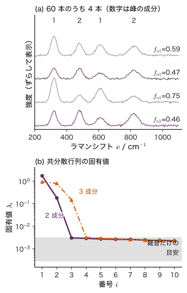
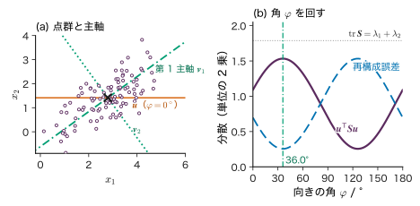
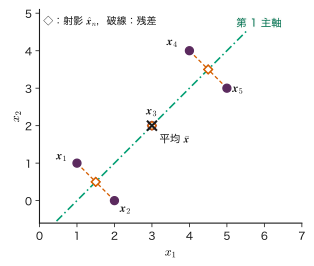
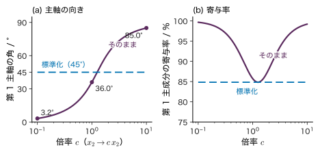
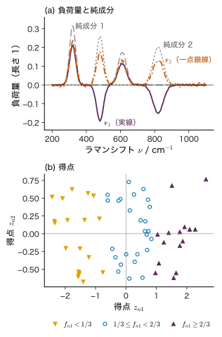
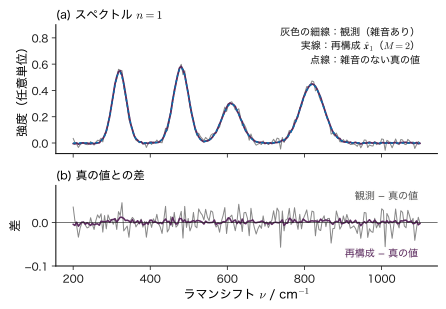

第18章連続潜在変数 — PCA と低次元表現
- 200 点の波数で測った Raman スペクトルを 60 本集めた．1 本のスペクトルは 200 個の数の組だが，本当に 200 個の自由度を持っているのか．何個の数で表せば足りるのか．
- 主成分分析（PCA）で取り出した「主成分」は，試料に含まれる物理的な成分（相，化合物）のスペクトルそのものなのか．
- 単位を µm から nm に変えただけで主成分の向きが変わるのはなぜか．どんなときに標準化すべきか．
2 種類の化合物を割合を変えて混ぜた粉末を 60 個つくり，それぞれの Raman スペクトルを 200 点の波数で測ったとしよう．1 本のスペクトルは 200 個の強度の組，つまり 200 次元の空間の 1 点である．しかし，雑音を除けば各スペクトルは「化合物 1 のスペクトルの何倍」と「化合物 2 のスペクトルの何倍」の和で決まるので，実際に自由に動けるのは 2 個の係数だけである．60 個の点は 200 次元の空間の中で，ほぼ 2 次元の平面の上に並んでいる．データの次元（測った数の個数）と，データが実際に持つ自由度は違う．
本章では，このような低次元の面を見つける主成分分析（principal component analysis，PCA）を，分散最大化の問題として Lagrange の未定乗数法から導き，再構成誤差の最小化と同じ答えになることを示す．次に SVD による計算，標準化，主成分の任意性を調べ，後半で確率的 PCA，因子分析，オートエンコーダー，可視化の方法（t-SNE，UMAP）の位置づけと注意を述べる．第17章の潜在変数は「どのクラスターか」という離散的な量だったが，本章の潜在変数は「低次元の座標」という連続的な量である．
- 分散最大化の問題を Lagrange の未定乗数法で解き，主成分が共分散行列の固有ベクトルであることを導ける．
- 射影の分散の最大化と再構成誤差の最小化が同じ解になることを示し，再構成誤差が捨てた固有値の和になることを説明できる．
- 2 次元の数点のデータで，共分散行列・固有値・主成分・射影・再構成を手で計算できる．
- 中心化したデータ行列の SVD から固有値 $\lambda_i=s_i^{2}/N$ と主成分を求め，寄与率・累積寄与率を計算できる．$1/N$ と $1/(N-1)$ の違いを説明できる．
- 単位の変更で主成分が変わる例を示し，相関行列の PCA（標準化）を使い分けられる．
- 主成分の符号・回転の任意性と，主成分が物理的な成分スペクトルと一致しない理由を説明できる．
- 確率的 PCA の周辺分布 $\Normal(\bm{\mu},\bm{W}\bm{W}^{\tp}+\sigma^{2}\bm{I})$ と潜在変数の事後分布を導き，因子分析・オートエンコーダー・t-SNE との関係を述べられる．
- 多数のスペクトルの PCA で「何成分あるか」を見積もり，その限界（雑音，ピークの移動，外れ値）を指摘できる．
入門ルートで読む節：この章は詳しいルートの章である．入門ルートでは 18.12（まとめ）だけを読めばよい．入門ルートで次に読むのは第22章である．
18.1 高次元データは低次元に乗っている詳しいルート
18.1.1 何をしたいのか
導入の例を数値で見る．図18.1(a) は，2 つの純成分を混ぜた試料の Raman 風のスペクトルである（教育用の合成データ．実在の物質のスペクトルではない）．純成分 1 は 320 cm−1 と 610 cm−1，純成分 2 は 480 cm−1 と 820 cm−1 に Gauss 型の峰を持つ．スペクトル $n$（$n=1,\dots,60$）の波数 $\nu$ での強度を
$$ x_n(\nu)=I_n\bigl\{f_{n1}\,s_1(\nu)+f_{n2}\,s_2(\nu)\bigr\}+\sigma\,\varepsilon_n(\nu) $$で作った．$s_k(\nu)$ は純成分 $k$ のスペクトル，$f_{nk}\ge0$（$f_{n1}+f_{n2}=1$）は混合比，$I_n$ は試料ごとに 0.7〜1.3 の範囲で変わる全体の強さ（測定条件による強度の揺らぎを模した），$\sigma\varepsilon_n(\nu)$ は標準偏差 $\sigma=0.02$（任意単位）の Gauss 雑音である．波数は 200〜1100 cm−1 の 200 点なので，1 本のスペクトルは $D=200$ 次元のベクトル $\bm{x}_n\in\R^{200}$ である．生成の詳細（峰の位置・幅・高さ，乱数）は 18.6 節のシミュレーター18.2 と同じで，seed は 20261113 である．

図18.1(b) は，60 本のスペクトルのばらつきを「どの向きにどれだけ広がっているか」に分解した結果（共分散行列の固有値．18.2 節で定義する）である．2 成分のデータでは大きな値が 2 個あり，3 番目からは急に 500 分の 1 ほどに下がって横に並ぶ．3 成分のデータでは大きな値が 3 個ある．200 次元のデータが，実際には 2 次元（3 成分なら 3 次元）の部分空間の近くに集まっていて，それ以外の向きには雑音の分だけしか広がっていないことを示している．この章の目標は，このような部分空間をデータだけから見つける方法を理解することである．
18.1.2 線形の低次元表現
雑音を除くと，スペクトル $n$ は 2 つのベクトル $\bm{s}_1,\bm{s}_2\in\R^{200}$（純成分のスペクトルを 200 点で並べたもの）の線形結合 $a_{n1}\bm{s}_1+a_{n2}\bm{s}_2$（$a_{nk}=I_nf_{nk}$）である．つまり 60 個の点はすべて，$\bm{s}_1$ と $\bm{s}_2$ が張る 2 次元の平面（原点を通る）の上にある．純成分が分からなくても，「データがある $M$ 次元の平面の近くにある」と仮定すれば，各データ点を次の形で近似できる．
\begin{equation} \bm{x}_n\approx\bar{\bm{x}}+\sum_{i=1}^{M}z_{ni}\,\bm{v}_i \label{eq:18-lowrank} \end{equation}ここで $n=1,\dots,N$，$\bar{\bm{x}}=\frac1N\sum_n\bm{x}_n\in\R^{D}$ はデータの平均，$\bm{v}_1,\dots,\bm{v}_M\in\R^{D}$ は平面の向きを決める互いに直交する長さ 1 のベクトル（基底），$z_{ni}\in\R$ はデータ点 $n$ の平面内の座標である．$M$ は平面の次元で，第8章で基底関数の数に使った $M$ と同じく「使う基底の数」を表す．
式 \eqref{eq:18-lowrank} の右辺に必要な数は $D+MD+NM$ 個で，$N=60$，$D=200$，$M=2$ なら 720 個，元の 12000 個の 6 % である．この $\bm{z}_n=(z_{n1},\dots,z_{nM})^{\tp}\in\R^{M}$ を，データ点 $n$ の低次元表現という．$\bm{z}_n$ は直接には測っていない量で，データの背後にある連続的な潜在変数（latent variable）とみなせる．
記号：この章の $\bm{z}$ と $M$
本書では $\bm{z}$ を，第14章では隠れ層の出力に，第17章では Gauss 混合モデルのどの成分かを表す one-hot の潜在変数に使った．本章の $\bm{z}_n\in\R^{M}$ は連続値の潜在変数（低次元の座標）である．$M$ は潜在変数の次元（残す主成分の数）で，$M\le D$ とする．また $\lambda_i$ は本章では固有値を表し，正則化係数の $\lambda$ には使わない（添字の有無で区別する）．
例題18.1 3 つの波数で見た 2 成分の混合
純成分のスペクトルを 3 つの波数だけで測り，$\bm{s}_1=(2,0,1)^{\tp}$，$\bm{s}_2=(0,2,1)^{\tp}$ とする（教育用の数値例）．係数 $(a_{n1},a_{n2})=(1,1),\,(2,1),\,(1,3)$ で混ぜた 3 本のスペクトル $\bm{x}_1,\bm{x}_2,\bm{x}_3$（雑音なし）を求めよ．(1) $\bm{x}_3$ を $\bm{x}_1$ と $\bm{x}_2$ の線形結合で表せ．(2) 3 本を行に並べた $3\times3$ 行列の行列式が 0 であることを確かめよ．(3) 3 次元の空間で，3 点はどんな集合の上にあるか．
解答 $\bm{x}_n=a_{n1}\bm{s}_1+a_{n2}\bm{s}_2$ より
$$ \begin{aligned}&\bm{x}_1=(2,2,2)^{\tp},\quad \bm{x}_2=(4,2,3)^{\tp},\\&\bm{x}_3=(2,6,4)^{\tp}.\end{aligned} $$(1) 係数の側で $(1,3)=c_1(1,1)+c_2(2,1)$ を解く．成分ごとに $c_1+2c_2=1$，$c_1+c_2=3$．辺々引くと $c_2=-2$，よって $c_1=5$．$\bm{x}_n$ は係数について線形なので $\bm{x}_3=5\bm{x}_1-2\bm{x}_2$．確かめると $5(2,2,2)-2(4,2,3)$ $=(10-8,\,10-4,\,10-6)$ $=(2,6,4)$．
(2) 第 1 行で余因子展開する．
(3) 3 点はどれも $\bm{s}_1$ と $\bm{s}_2$ の線形結合なので，原点を通り $\bm{s}_1,\bm{s}_2$ が張る平面の上にある．法線ベクトルは外積 $\bm{s}_1\times\bm{s}_2$ $=(0\cdot1-1\cdot2,\ 1\cdot0-2\cdot1,$ $2\cdot2-0\cdot0)$ $=(-2,-2,4)$ なので，平面は $-2x-2y+4w=0$，すなわち $x+y=2w$（3 番目の座標を $w$ と書いた）である．$\bm{x}_1$：$2+2=2\cdot2$，$\bm{x}_2$：$4+2=2\cdot3$，$\bm{x}_3$：$2+6=2\cdot4$ で，すべて満たす．3 つの数で測っていても，自由度は 2 である．
実際のデータには雑音があるので，点は平面の上ではなく平面の近くにある．しかも純成分のスペクトルは分かっていない．そこで次の節では，「データの点群がいちばん広がっている向き」を順に探すことで，式 \eqref{eq:18-lowrank} の $\bm{v}_i$ をデータから決める．
18.2 PCA の導出 — 射影の分散を最大にする詳しいルート
18.2.1 定義と記号
$N$ 個のデータ点 $\bm{x}_1,\dots,\bm{x}_N\in\R^{D}$（列ベクトル）がある．ラベル（目標値）は無い．PCA で使う量を定義する．
定義18.1 標本平均・中心化したデータ行列・標本共分散行列
標本平均 $\bar{\bm{x}}\in\R^{D}$，中心化したデータ行列 $\bm{X}\in\R^{N\times D}$（第 $n$ 行が $(\bm{x}_n-\bar{\bm{x}})^{\tp}$），標本共分散行列 $\bm{S}\in\R^{D\times D}$ を次の式 \eqref{eq:18-cov} で定める．$\bm{S}$ の $(j,k)$ 成分は $j$ 番目と $k$ 番目の変数の共分散，対角成分は各変数の分散である．本章では分散を $1/N$ で定義する（$1/(N-1)$ との違いは 18.4 節）．
$\bm{S}$ は対称（$\bm{S}^{\tp}=\bm{S}$）で半正定値（すべての $\bm{a}\in\R^{D}$ で $\bm{a}^{\tp}\bm{S}\bm{a}=\frac1N\sum_n\{\bm{a}^{\tp}(\bm{x}_n-\bar{\bm{x}})\}^{2}\ge0$）である（第2章 2.5 節）．したがって $\bm{S}$ は，互いに直交する長さ 1 の固有ベクトル $\bm{v}_1,\dots,\bm{v}_D$ と 0 以上の固有値 $\lambda_1\ge\lambda_2\ge\dots\ge\lambda_D\ge0$ を持ち，
$$ \begin{aligned}&\bm{S}\bm{v}_i=\lambda_i\bm{v}_i,\qquad \bm{v}_i^{\tp}\bm{v}_j=\begin{cases}1&(i=j)\\0&(i\ne j)\end{cases},\\ &\bm{S}=\sum_{i=1}^{D}\lambda_i\bm{v}_i\bm{v}_i^{\tp}\end{aligned} $$と書ける（実対称行列の直交行列による対角化．第3章 3.6 節で $\bm{\Sigma}$ について使ったのと同じ事実で，証明は付録A の A.3）．固有値の番号は大きい順に付ける．$\bm{S}$ の対角成分の和（トレース）は固有値の和に等しく，$\tr\bm{S}=\sum_i\lambda_i$ を全分散という．
18.2.2 1 つの向きへの射影とその分散
長さ 1 のベクトル $\bm{u}\in\R^{D}$（$\bm{u}^{\tp}\bm{u}=1$）を 1 つ選び，各データ点の平均からのずれをこの向きに射影する．射影の長さ（符号つき）は
$$ z_n=\bm{u}^{\tp}(\bm{x}_n-\bar{\bm{x}})\qquad(n=1,\dots,N) $$である（図18.2）．$z_n$ の平均は $\frac1N\sum_n\bm{u}^{\tp}(\bm{x}_n-\bar{\bm{x}})$ $=\bm{u}^{\tp}\bigl(\frac1N\sum_n\bm{x}_n-\bar{\bm{x}}\bigr)=\bm{u}^{\tp}\bm{0}=0$ なので，$z_n$ の分散は 2 乗の平均である．
\begin{equation} \begin{aligned} &\frac1N\sum_{n=1}^{N}z_n^{2}\\ &=\frac1N\sum_{n}\bm{u}^{\tp}(\bm{x}_n-\bar{\bm{x}})\\ &\qquad\times(\bm{x}_n-\bar{\bm{x}})^{\tp}\bm{u}\\ &=\bm{u}^{\tp}\bm{S}\bm{u} \end{aligned} \label{eq:18-projvar} \end{equation}2 行目は $z_n^{2}=z_n\,z_n$ の片方を $\bm{u}^{\tp}(\bm{x}_n-\bar{\bm{x}})$，もう片方を（スカラーなので転置しても同じ）$(\bm{x}_n-\bar{\bm{x}})^{\tp}\bm{u}$ と書いた．3 行目は $\bm{u}$ が $n$ によらないので和の外に出し，残った $\frac1N\sum_n(\bm{x}_n-\bar{\bm{x}})(\bm{x}_n-\bar{\bm{x}})^{\tp}$ を式 \eqref{eq:18-cov} の $\bm{S}$ で置き換えた．
18.2.3 分散最大化を Lagrange の未定乗数法で解く
点群がいちばん広がっている向きとは，射影の分散 \eqref{eq:18-projvar} が最大の向きである．$\bm{u}$ の長さを自由にすると $\bm{u}^{\tp}\bm{S}\bm{u}$ はいくらでも大きくできるので，長さを 1 に固定する．問題は
$$ \max_{\bm{u}\in\R^{D}}\ \bm{u}^{\tp}\bm{S}\bm{u}\qquad\text{条件：}\ \bm{u}^{\tp}\bm{u}=1 $$である．等式制約つきの最大化なので，第7章 7.7 節の Lagrange の未定乗数法を使う．等式制約の乗数を $\nu$，Lagrange 関数を $\Lambda$ と書く（第7章と同じ記号）．
導出：主成分は共分散行列の固有ベクトル
Lagrange 関数を
\begin{equation} \begin{aligned}\Lambda(\bm{u},\nu)&=\bm{u}^{\tp}\bm{S}\bm{u}\\&\quad-\nu\,(\bm{u}^{\tp}\bm{u}-1)\end{aligned} \label{eq:18-lagr} \end{equation}とおく．最大値を与える $\bm{u}$ では $\partial\Lambda/\partial\bm{u}=\bm{0}$ である．2 次形式の勾配を成分で計算する．$\bm{u}^{\tp}\bm{S}\bm{u}=\sum_{j}\sum_{k}u_jS_{jk}u_k$ を $u_l$ で偏微分すると，$j=l$ の項と $k=l$ の項から
$$ \begin{aligned}\pdiff{}{u_l}\sum_{j,k}u_jS_{jk}u_k&=\sum_{k}S_{lk}u_k+\sum_{j}u_jS_{jl}\\&=2\sum_{k}S_{lk}u_k\end{aligned} $$（最後は $\bm{S}$ が対称なので $S_{jl}=S_{lj}$ を使った）．ベクトルで書けば $\partial(\bm{u}^{\tp}\bm{S}\bm{u})/\partial\bm{u}=2\bm{S}\bm{u}$．同様に $\partial(\bm{u}^{\tp}\bm{u})/\partial\bm{u}=2\bm{u}$ である（$\bm{S}=\bm{I}$ の場合）．よって
$$ \pdiff{\Lambda}{\bm{u}}=2\bm{S}\bm{u}-2\nu\bm{u}=\bm{0} \ \Longrightarrow\ \bm{S}\bm{u}=\nu\bm{u} . $$つまり最適な $\bm{u}$ は $\bm{S}$ の固有ベクトルで，乗数 $\nu$ はその固有値である．このとき射影の分散は，左から $\bm{u}^{\tp}$ を掛けて $\bm{u}^{\tp}\bm{u}=1$ を使うと
$$ \bm{u}^{\tp}\bm{S}\bm{u}=\nu\,\bm{u}^{\tp}\bm{u}=\nu $$となり，固有値そのものである．固有ベクトルはどれも $\partial\Lambda/\partial\bm{u}=\bm{0}$ を満たすが，分散が最大になるのは固有値が最大のもの $\bm{u}=\bm{v}_1$ で，最大値は $\lambda_1$ である．
これが固有ベクトルの中だけでなく，長さ 1 のすべての $\bm{u}$ の中で最大であることは，定理18.2 の証明で $M=1$ とすれば示される．
（導出終わり）
最大値を与える向き $\bm{v}_1$ を第 1 主成分の向き（第 1 主軸），$z_{n1}=\bm{v}_1^{\tp}(\bm{x}_n-\bar{\bm{x}})$ を点 $n$ の第 1 主成分得点という．固有ベクトル $\bm{v}_i$ の成分を負荷量（loading）と呼ぶことも多い（スペクトルの PCA では $\bm{v}_i$ を波数の関数として描く）．
18.2.4 第 2 主成分以降
第 2 主成分は，「第 1 主成分と直交する向きのうちで，射影の分散が最大の向き」と定める．制約が 2 つ（$\bm{u}^{\tp}\bm{u}=1$，$\bm{v}_1^{\tp}\bm{u}=0$）になるので，乗数を 2 つ使う．
$$ \Lambda(\bm{u},\nu,\nu')=\bm{u}^{\tp}\bm{S}\bm{u}-\nu(\bm{u}^{\tp}\bm{u}-1)-\nu'\,\bm{v}_1^{\tp}\bm{u} $$$\bm{u}$ で微分して 0 とおくと $2\bm{S}\bm{u}-2\nu\bm{u}-\nu'\bm{v}_1=\bm{0}$．左から $\bm{v}_1^{\tp}$ を掛ける．$\bm{v}_1^{\tp}\bm{S}\bm{u}=(\bm{S}\bm{v}_1)^{\tp}\bm{u}=\lambda_1\bm{v}_1^{\tp}\bm{u}=0$，$\bm{v}_1^{\tp}\bm{u}=0$，$\bm{v}_1^{\tp}\bm{v}_1=1$ なので $\nu'=0$ が出る．残りは再び $\bm{S}\bm{u}=\nu\bm{u}$ で，$\bm{v}_1$ と直交する固有ベクトルのうち固有値が最大のもの，つまり $\bm{u}=\bm{v}_2$（分散 $\lambda_2$）が答えである．同じ議論を繰り返すと，次の定理を得る．
定理18.1 主成分分析
標本共分散行列 $\bm{S}$ の固有値を $\lambda_1\ge\dots\ge\lambda_D\ge0$，対応する長さ 1 の固有ベクトルを $\bm{v}_1,\dots,\bm{v}_D$ とする．第 $i$ 主成分の向きは $\bm{v}_i$，その向きへの射影 $z_{ni}=\bm{v}_i^{\tp}(\bm{x}_n-\bar{\bm{x}})$ の分散は $\lambda_i$ である．異なる主成分の得点どうしは無相関である（$i\ne j$ なら $\frac1N\sum_nz_{ni}z_{nj}=\bm{v}_i^{\tp}\bm{S}\bm{v}_j=\lambda_j\bm{v}_i^{\tp}\bm{v}_j=0$）．
固有値が等しいもの（例えば $\lambda_1=\lambda_2$）があると，その固有空間の中では向きが一つに決まらない．データでは固有値がちょうど等しくなることはまずないが，近いと主成分の向きは少しのデータの違いで大きく変わる（18.6 節，18.11 節）．
18.2.5 再構成誤差の最小化と同じ解になる
PCA にはもう一つの見方がある．各点を $M$ 次元の平面の上の点で置き換えたとき，元の点とのずれの 2 乗の平均（再構成誤差）を最小にする平面を探す，という見方である．まず $M=1$ で調べる．
図18.2 のように，向き $\bm{u}$ の直線上で $\bm{x}_n$ に最も近い点は $\hat{\bm{x}}_n=\bar{\bm{x}}+z_n\bm{u}$（$z_n=\bm{u}^{\tp}(\bm{x}_n-\bar{\bm{x}})$）である．残差 $\bm{x}_n-\hat{\bm{x}}_n=(\bm{x}_n-\bar{\bm{x}})-z_n\bm{u}$ は $\bm{u}$ と直交する（$\bm{u}^{\tp}(\bm{x}_n-\hat{\bm{x}}_n)=z_n-z_n\bm{u}^{\tp}\bm{u}=0$）．したがって Pythagoras の定理から
$$ \norm{\bm{x}_n-\bar{\bm{x}}}^{2}=z_n^{2}+\norm{\bm{x}_n-\hat{\bm{x}}_n}^{2}. $$両辺を $n$ について平均する．左辺の平均は $\frac1N\sum_n\norm{\bm{x}_n-\bar{\bm{x}}}^{2}$ $=\frac1N\sum_n\sum_j(x_{nj}-\bar{x}_j)^{2}$ $=\sum_jS_{jj}=\tr\bm{S}$ である．よって
\begin{equation} \begin{aligned}&\frac1N\sum_{n=1}^{N}\norm{\bm{x}_n-\hat{\bm{x}}_n}^{2}\\&=\tr\bm{S}-\bm{u}^{\tp}\bm{S}\bm{u}\end{aligned} \label{eq:18-recon1} \end{equation}$\tr\bm{S}$ は $\bm{u}$ によらない定数なので，再構成誤差を最小にすることと，射影の分散 $\bm{u}^{\tp}\bm{S}\bm{u}$ を最大にすることは同じである．「どの向きに射影しても，全分散＝残した分散＋捨てた分散」という保存則が成り立っているからである．
$M$ 次元に一般化する．$\bm{B}=(\bm{b}_1,\dots,\bm{b}_M)\in\R^{D\times M}$ を互いに直交する長さ 1 の列を持つ行列（$\bm{B}^{\tp}\bm{B}=\bm{I}_M$）とし，$\bm{x}_n$ を $\bar{\bm{x}}$ を通り $\bm{b}_1,\dots,\bm{b}_M$ が張る平面に直交射影した点を $\hat{\bm{x}}_n=\bar{\bm{x}}+\bm{B}\bm{B}^{\tp}(\bm{x}_n-\bar{\bm{x}})$ とする．$M=1$ と同じ計算（各 $\bm{b}_i$ の向きの射影を足し，残差がどの $\bm{b}_i$ とも直交することを使う）で
$$ \begin{aligned}\frac1N\sum_{n}\norm{\bm{x}_n-\hat{\bm{x}}_n}^{2}&=\tr\bm{S}-\sum_{i=1}^{M}\bm{b}_i^{\tp}\bm{S}\bm{b}_i\\&=\tr\bm{S}-\tr(\bm{B}^{\tp}\bm{S}\bm{B})\end{aligned} $$となる．残る問題は，$\tr(\bm{B}^{\tp}\bm{S}\bm{B})$ の最大値である．
定理18.2 再構成誤差は捨てた固有値の和
$\bm{B}^{\tp}\bm{B}=\bm{I}_M$ を満たす $\bm{B}\in\R^{D\times M}$ について $\tr(\bm{B}^{\tp}\bm{S}\bm{B})\le\lambda_1+\dots+\lambda_M$ であり，等号は $\bm{B}=(\bm{v}_1,\dots,\bm{v}_M)$ のとき成り立つ．したがって $M$ 次元の平面による再構成誤差の最小値は次の式 \eqref{eq:18-reconM} で，最適な平面は第 1〜第 $M$ 主成分が張る平面（主部分空間）である．
証明
$\bm{S}=\sum_i\lambda_i\bm{v}_i\bm{v}_i^{\tp}$ を代入する．
$$ \begin{aligned}\tr(\bm{B}^{\tp}\bm{S}\bm{B})&=\sum_{i=1}^{D}\lambda_i\,\tr(\bm{B}^{\tp}\bm{v}_i\bm{v}_i^{\tp}\bm{B})\\&=\sum_{i=1}^{D}\lambda_i\norm{\bm{B}^{\tp}\bm{v}_i}^{2}\equiv\sum_{i=1}^{D}\lambda_ic_i .\end{aligned} $$ここで $c_i=\norm{\bm{B}^{\tp}\bm{v}_i}^{2}$ である（$\tr(\bm{a}\bm{a}^{\tp})=\bm{a}^{\tp}\bm{a}$ を $\bm{a}=\bm{B}^{\tp}\bm{v}_i$ に使った）．$c_i$ には 2 つの性質がある．
- $0\le c_i\le1$：$c_i=\sum_{m=1}^{M}(\bm{b}_m^{\tp}\bm{v}_i)^{2}$ は，長さ 1 のベクトル $\bm{v}_i$ を互いに直交する長さ 1 のベクトル $\bm{b}_1,\dots,\bm{b}_M$ の向きに分けた成分の 2 乗和なので，$\norm{\bm{v}_i}^{2}=1$ を超えない．
- $\sum_ic_i=M$：$\sum_i\bm{v}_i\bm{v}_i^{\tp}=\bm{I}$（$\bm{v}_i$ は正規直交基底）なので $\sum_ic_i=\tr\bigl(\bm{B}^{\tp}\sum_i\bm{v}_i\bm{v}_i^{\tp}\bm{B}\bigr)$ $=\tr(\bm{B}^{\tp}\bm{B})=\tr\bm{I}_M=M$．
合計が $M$ で各々が 1 以下の重み $c_i$ を，大きい順に並んだ $\lambda_i$ に配るとき，$\sum_i\lambda_ic_i$ が最大になるのは大きいほうから $M$ 個に重み 1 を配るときで，その値は $\lambda_1+\dots+\lambda_M$ である（重みを 1 つでも小さい $\lambda$ の側へ移すと和は減るか変わらない）．$\bm{B}=(\bm{v}_1,\dots,\bm{v}_M)$ なら $c_1=\dots=c_M=1$，残りは 0 なので等号が成り立つ．最後に $\tr\bm{S}=\sum_{i=1}^{D}\lambda_i$ から引けば式 \eqref{eq:18-reconM} を得る．
（証明終わり）
まとめると，主成分の向きは「射影したときに最も広がって見える向き」でもあり，「その向きの平面で近似したときに最も誤差の小さい向き」でもある．PCA は Hotelling（1933）の分散最大化と Pearson（1901）の当てはめ誤差最小化という 2 つの出発点を持ち，両者は同じ答えになる．以下では，$M$ 個の主成分で近似した点
\begin{equation} \begin{aligned}\hat{\bm{x}}_n&=\bar{\bm{x}}+\sum_{i=1}^{M}z_{ni}\bm{v}_i,\\ z_{ni}&=\bm{v}_i^{\tp}(\bm{x}_n-\bar{\bm{x}})\end{aligned} \label{eq:18-xhat} \end{equation}を再構成と呼ぶ．式 \eqref{eq:18-lowrank} の $\bm{v}_i$ と $z_{ni}$ を，主成分とその得点で決めたものである．
例題18.2 2 次元の共分散行列から主軸を求める
2 つの測定値 $(x_1,x_2)$ を 100 個集めたデータ（シミュレーター18.1 の既定のデータ．教育用の合成データ）の標本共分散行列は
$$ \bm{S}=\begin{pmatrix}1.0913&0.60767\\0.60767&0.69686\end{pmatrix} $$であった（単位は各測定値の単位の 2 乗）．(1) 固有値 $\lambda_1,\lambda_2$ を求めよ．(2) 第 1 主軸と $x_1$ 軸のなす角 $\varphi_1$ を求めよ．(3) 向き $\bm{u}=(\cos\varphi,\sin\varphi)^{\tp}$ の $\varphi=0^{\circ},45^{\circ},90^{\circ}$ について，射影の分散と再構成誤差を求めよ．
解答 (1) 固有方程式 $\det(\bm{S}-\lambda\bm{I})=0$ は，2×2 では $\lambda^{2}-(\tr\bm{S})\lambda+\det\bm{S}=0$ である．
$$ \begin{aligned} \tr\bm{S}&=1.0913+0.69686=1.78816,\\ \det\bm{S}&=1.0913\times0.69686-0.60767^{2}\\&=0.76048-0.36926=0.39122 . \end{aligned} $$解の公式から
$$ \begin{aligned} \lambda_{1,2}&=\frac{1.78816\pm\sqrt{1.78816^{2}-4\times0.39122}}{2}\\ &=\frac{1.78816\pm\sqrt{3.19752-1.56488}}{2}\\&=\frac{1.78816\pm1.27775}{2}, \end{aligned} $$$\lambda_1=1.5330$，$\lambda_2=0.2552$．（和 $1.7882=\tr\bm{S}$，積 $0.3912=\det\bm{S}$ で確かめられる．）
(2) $\bm{S}\bm{v}=\lambda_1\bm{v}$ の第 1 行 $(1.0913-\lambda_1)v_1+0.60767v_2=0$ から $v_2/v_1=(\lambda_1-1.0913)/0.60767$ $=0.4417/0.60767=0.7268$．$\varphi_1=\arctan0.7268=36.0^{\circ}$．（2×2 では $\tan2\varphi_1=2S_{12}/(S_{11}-S_{22})$ $=1.21534/0.39444=3.0812$ からも $2\varphi_1=72.0^{\circ}$ と求まる．）
(3) $\bm{u}^{\tp}\bm{S}\bm{u}=S_{11}\cos^{2}\varphi$ $+2S_{12}\cos\varphi\sin\varphi+S_{22}\sin^{2}\varphi$，再構成誤差は式 \eqref{eq:18-recon1} から $1.78816-\bm{u}^{\tp}\bm{S}\bm{u}$．
- $\varphi=0^{\circ}$：$\bm{u}^{\tp}\bm{S}\bm{u}=S_{11}=1.0913$，再構成誤差 $0.69686$．
- $\varphi=45^{\circ}$：$\cos^{2}=\sin^{2}=\cos\sin=1/2$ なので $\frac12(1.0913+2\times0.60767+0.69686)$ $=1.502$，再構成誤差 $0.2864$．
- $\varphi=90^{\circ}$：$S_{22}=0.69686$，再構成誤差 $1.0913$．
どの角でも 2 つの和は $\tr\bm{S}=1.7882$ である．最大の $1.5330=\lambda_1$ は $\varphi=36.0^{\circ}$ のときだけ実現し，45° でもわずかに小さい．

以上を，向きを手で回しながら確かめられるのが次のシミュレーターである．
シミュレーター18.1 向きを回して主成分を探す
2 次元の点群を向き $\bm{u}$（角 $\varphi$）に射影し，射影の分散 $\bm{u}^{\tp}\bm{S}\bm{u}$ と再構成誤差が角とともにどう変わるか，最大になる向きが共分散行列の固有ベクトルであることを確かめる装置である．単位の変更と標準化（18.5 節）も試せる．分散は本文と同じく $1/N$ で定義している．装置は向き $\bm{u}$ への射影の長さを $t_n$ と表示するが，本章の $z_n$（18.2.2 項）と同じものである（本書では $t$ を時刻に取っておく）．
操作と観察
- 開いた直後の既定（「表示するデータ」は「2 次元の点群（向きを回す）」，データ数 $N=100$，倍率 $c=1.00$，乱数の seed 20261113，角 $\varphi=0^{\circ}$）のまま読み出しを見る → $S_{11},S_{12},S_{22}$ が 1.091，0.6077，0.6969，固有値 $\lambda_1,\lambda_2$ が 1.533，0.2552，第 1 主軸の角 36.0°，寄与率 85.7 %．射影の分散 1.091，再構成誤差 0.6969．例題18.2 と比べる．
- 「向き $u$ の角 $\varphi$」を 45° と 90° に動かす → 射影の分散と再構成誤差が 1.502 と 0.2864，0.6969 と 1.091 になり，どの角でも和が $\tr\bm{S}=1.788$ であることを下の図で見る．式 \eqref{eq:18-recon1} と比べる．
- 「主軸に合わせる」を押す → $\varphi=36.0^{\circ}$ で射影の分散が $1.533=\lambda_1$（最大），再構成誤差が $0.2552=\lambda_2$ になる．式 \eqref{eq:18-reconM} の $D=2$，$M=1$ の場合である．
- （18.5 節を読んでから）「$x_2$ の単位を変える倍率 $c$」を右端の 10 にする → 第 1 主軸の角が 85.0°，固有値が 70.22 と 0.5571，寄与率 99.2 % になる．左端の 0.1 では 3.2°，1.095 と 0.003574．次に「標準化する」に印を付ける → $c$ によらず 45.0°，固有値 1.697 と 0.3032（$1\pm r$，$r=0.697$）になる．式 \eqref{eq:18-corr-eig} と比べる．
操作後の問い
- 手順 2 で，射影の分散と再構成誤差の和がどの角でも同じなのはなぜか．
答えの例
各点で，平均からのずれ $\bm{x}_n-\bar{\bm{x}}$ は「向き $\bm{u}$ の成分」と「それに直交する残差」に分かれ，両者は直交するので Pythagoras の定理 $\norm{\bm{x}_n-\bar{\bm{x}}}^{2}=z_n^{2}+\norm{\bm{x}_n-\hat{\bm{x}}_n}^{2}$ が成り立つ．$n$ について平均すると，左辺は向きによらない $\tr\bm{S}=1.788$ である（式 \eqref{eq:18-recon1}）．
- 手順 4 で，倍率 $c=10$ のとき第 1 主成分の寄与率が 99.2 % に上がった．データの構造がより 1 次元的になったと言えるか．
答えの例
言えない．$x_2$ の数値を 10 倍しただけで，点どうしの関係は何も変わっていない．$x_2$ の分散が 100 倍になって全分散のほとんどを占めたので，第 1 主成分がほぼ $x_2$ の軸になり，寄与率が見かけ上上がっただけである．単位がそろわない量を並べるときは，相関行列の PCA（標準化）を検討する（18.5 節）．
18.3 手計算 — 2 次元の 5 点詳しいルート
PCA の手順を，手で追える大きさのデータで一通り実行する．固有値・固有ベクトルの求め方は大学数学 第12章 12.1，対角化は12.3 と同じである．手順は次の 5 段である．
- 平均 $\bar{\bm{x}}$ を求め，各点から引く（中心化）．
- 標本共分散行列 $\bm{S}$（式 \eqref{eq:18-cov}）を作る．
- $\bm{S}$ の固有値を大きい順に並べ，長さ 1 の固有ベクトルを求める．
- 得点 $z_{ni}=\bm{v}_i^{\tp}(\bm{x}_n-\bar{\bm{x}})$ を計算する．
- 必要なら $M$ 個で再構成し（式 \eqref{eq:18-xhat}），再構成誤差が捨てた固有値の和になることを確かめる．
例題18.3 5 点の PCA を手で計算する
2 つの記述子 $(x_1,x_2)$ を持つ 5 個のデータ点 $\bm{x}_1=(1,1)^{\tp}$，$\bm{x}_2=(2,0)^{\tp}$，$\bm{x}_3=(3,2)^{\tp}$，$\bm{x}_4=(4,4)^{\tp}$，$\bm{x}_5=(5,3)^{\tp}$ がある（教育用の数値例）．(1) 平均と標本共分散行列 $\bm{S}$（$1/N$）を求めよ．(2) 固有値と長さ 1 の固有ベクトルを求めよ．(3) 第 1 主成分の得点 $z_{n1}$ と，その分散を求めよ．(4) 第 1 主成分だけで再構成した点 $\hat{\bm{x}}_n$ と，再構成誤差を求めよ．
解答 (1) $\bar{\bm{x}}=\frac15(1+2+3+4+5,$ $1+0+2+4+3)^{\tp}=(3,2)^{\tp}$．中心化した点は
$$ \begin{aligned}\bm{x}_n-\bar{\bm{x}}:\ &(-2,-1),\ (-1,-2),\ (0,0),\\&(1,2),\ (2,1).\end{aligned} $$2 乗と積の和は $\sum(x_1-\bar{x}_1)^{2}=4+1+0+1+4=10$，$\sum(x_2-\bar{x}_2)^{2}=1+4+0+4+1=10$，$\sum(x_1-\bar{x}_1)(x_2-\bar{x}_2)$ $=2+2+0+2+2=8$．$N=5$ で割って
$$ \bm{S}=\frac15\begin{pmatrix}10&8\\8&10\end{pmatrix}=\begin{pmatrix}2&1.6\\1.6&2\end{pmatrix}. $$(2) $\det(\bm{S}-\lambda\bm{I})=(2-\lambda)^{2}-1.6^{2}=0$ より $2-\lambda=\pm1.6$，$\lambda_1=3.6$，$\lambda_2=0.4$．$\lambda_1=3.6$ のとき $(\bm{S}-3.6\bm{I})\bm{v}=\bm{0}$ の第 1 行は $-1.6v_1+1.6v_2=0$ なので $v_1=v_2$，長さを 1 にして $\bm{v}_1=\frac{1}{\sqrt2}(1,1)^{\tp}$．$\lambda_2=0.4$ のとき $1.6v_1+1.6v_2=0$ から $\bm{v}_2=\frac{1}{\sqrt2}(-1,1)^{\tp}$．$\bm{v}_1^{\tp}\bm{v}_2=\frac12(-1+1)=0$ で直交している．全分散は $\tr\bm{S}=4=3.6+0.4$．
(3) $z_{n1}=\bm{v}_1^{\tp}(\bm{x}_n-\bar{\bm{x}})$ $=\{(x_{n1}-3)+(x_{n2}-2)\}/\sqrt2$ なので
平均は 0，分散は $\frac15\bigl(4\times\frac92\bigr)=\frac{18}{5}=3.6=\lambda_1$ で，定理18.1 のとおりである．
(4) $\hat{\bm{x}}_n=\bar{\bm{x}}+z_{n1}\bm{v}_1$．$z_{n1}\bm{v}_1=\frac{z_{n1}}{\sqrt2}(1,1)^{\tp}$ で，$z_{n1}/\sqrt2=-1.5,-1.5,0,1.5,1.5$ だから
残差 $\bm{x}_n-\hat{\bm{x}}_n$ は $(-0.5,0.5)$，$(0.5,-0.5)$，$(0,0)$，$(-0.5,0.5)$，$(0.5,-0.5)$ で，どれも $\bm{v}_2$ の向きであり，2 乗の長さは 0.5（点 3 だけ 0）．再構成誤差は $\frac15(4\times0.5)=0.4=\lambda_2$ で，式 \eqref{eq:18-reconM} と一致する．第 1 主成分の寄与率（18.4 節）は $3.6/4=90\ \%$ である．

この例で，5 点の 10 個の座標は「平均 2 個＋主軸の向き 1 個（角 45°）＋得点 5 個」でほぼ表され，失った情報は第 2 主成分の向きの小さなずれ（分散 0.4）だけである．点 1 と点 2 は，元の座標では違う点だが，第 1 主成分の得点だけを見ると区別できない．次元を減らすとは，このように「小さな違いを捨てる」ことでもある．捨てた違いが本当に雑音なのか，それとも重要な違いなのかはデータの側の知識で判断しなければならない（18.11 節）．
18.4 SVD との関係 — 数値計算と寄与率詳しいルート
18.4.1 中心化したデータ行列の特異値分解
実際の計算では，$\bm{S}$ を作って固有値問題を解くより，中心化したデータ行列 $\bm{X}\in\R^{N\times D}$（定義18.1）を直接特異値分解（SVD）するほうがよい．SVD の定義は第8章 8.5 節（定義8.3）にある．$r=\min(N,D)$ として
\begin{equation} \begin{aligned}&\bm{X}=\bm{U}\bm{S}_{\mathrm{sv}}\bm{V}^{\tp},\\ &\bm{U}\in\R^{N\times r},\ \ \bm{V}\in\R^{D\times r},\\ &\bm{S}_{\mathrm{sv}}=\diag(s_1,\dots,s_r)\end{aligned} \label{eq:18-svd} \end{equation}と分解する．$\bm{U}$ と $\bm{V}$ の列はそれぞれ互いに直交する長さ 1 のベクトル（$\bm{U}^{\tp}\bm{U}=\bm{V}^{\tp}\bm{V}=\bm{I}_r$），特異値は $s_1\ge\dots\ge s_r\ge0$ である．特異値の対角行列を $\bm{S}_{\mathrm{sv}}$ と書くのは，標本共分散行列 $\bm{S}$ と区別するためである（第8章では $\bm{\Sigma}$ と書いたが，本章では共分散行列と紛れるので避ける）．
導出：SVD から固有値・主成分・得点を読む
式 \eqref{eq:18-svd} を式 \eqref{eq:18-cov} の $\bm{S}=\frac1N\bm{X}^{\tp}\bm{X}$ に代入する．$\bm{X}^{\tp}=\bm{V}\bm{S}_{\mathrm{sv}}\bm{U}^{\tp}$（対角行列は転置しても同じ）と $\bm{U}^{\tp}\bm{U}=\bm{I}$ を使うと
$$ \bm{S}=\frac1N\bm{V}\bm{S}_{\mathrm{sv}}\bm{U}^{\tp}\bm{U}\bm{S}_{\mathrm{sv}}\bm{V}^{\tp}=\bm{V}\,\frac{\bm{S}_{\mathrm{sv}}^{2}}{N}\,\bm{V}^{\tp}. $$右から $\bm{V}$ を掛けると $\bm{S}\bm{V}=\bm{V}\bm{S}_{\mathrm{sv}}^{2}/N$，列ごとに書けば $\bm{S}\bm{v}_i=(s_i^{2}/N)\,\bm{v}_i$ である．したがって $\bm{V}$ の第 $i$ 列 $\bm{v}_i$ が第 $i$ 主成分の向きで，固有値は
\begin{equation} \lambda_i=\frac{s_i^{2}}{N} \label{eq:18-lam-sv} \end{equation}である．得点を並べた行列 $\bm{Z}\in\R^{N\times r}$（$Z_{ni}=z_{ni}$）は，$\bm{Z}=\bm{X}\bm{V}=\bm{U}\bm{S}_{\mathrm{sv}}\bm{V}^{\tp}\bm{V}=\bm{U}\bm{S}_{\mathrm{sv}}$，すなわち
\begin{equation} z_{ni}=s_i\,U_{ni} \label{eq:18-score-sv} \end{equation}である．
（導出終わり）
注意：SVD の $\bm{U}$ は主成分の向きではない
主成分の向き $\bm{v}_i\in\R^{D}$ は SVD の右特異ベクトル（$\bm{V}$ の列）である．左特異ベクトル $\bm{U}$ の列は $\R^{N}$（データ点の番号の空間）のベクトルで，式 \eqref{eq:18-score-sv} のとおり得点を特異値で割ったものである．$\bm{X}$ の行と列の並べ方（データ点を行に置くか列に置くか）を逆にした文献では $\bm{U}$ と $\bm{V}$ の役割が入れ替わるので，読むときに確かめる．
18.4.2 なぜ SVD で計算するのか
理由は 2 つある．
- 精度：$\bm{X}^{\tp}\bm{X}$ の条件数は $\bm{X}$ の条件数の 2 乗になり（第8章 8.5 節の正規方程式と同じ理由），倍精度では最大の固有値の $10^{-16}$ 倍程度より小さい固有値が丸め誤差に埋もれる．SVD は $\bm{X}$ を直接分解するので，この 2 乗が起きない．
- 大きさ：スペクトルや画像では $D\gg N$ のことが多い（例：$D=200$，$N=60$）．$\bm{S}$ は $D\times D$ だが，SVD は $\min(N,D)$ 個の特異値だけを求めればよい．$N\times N$ の $\bm{X}\bm{X}^{\tp}=\bm{U}\bm{S}_{\mathrm{sv}}^{2}\bm{U}^{\tp}$ を解いて $\bm{v}_i=\bm{X}^{\tp}\bm{u}_i/s_i$ で戻す方法もある．
なお，中心化した $\bm{X}$ の各列の和は 0 なので（$\sum_n(\bm{x}_n-\bar{\bm{x}})=\bm{0}$），$\bm{X}$ の階数は $N-1$ 以下である．0 でない固有値は多くとも $\min(N-1,D)$ 個しかない．$N=60$，$D=200$ のスペクトルなら，200 個の固有値のうち 141 個以上は（丸め誤差を除いて）ちょうど 0 である．
18.4.3 $1/N$ と $1/(N-1)$，寄与率と累積寄与率
標本の分散を $1/(N-1)$ で割る定義（不偏分散）もよく使われる．その場合の共分散行列は $\frac{N}{N-1}\bm{S}$ なので，固有ベクトル（主成分の向き）は同じで，固有値だけが $N/(N-1)$ 倍になり，$\lambda_i=s_i^{2}/(N-1)$ となる．ソフトウェアによって既定が違うので，固有値の数値そのものを比べるときは確かめる．第 $i$ 主成分の寄与率と，第 $M$ 主成分までの累積寄与率を次で定める．どちらの定義でも値は同じである．
\begin{equation} \begin{aligned}&\text{寄与率}=\frac{\lambda_i}{\sum_{j=1}^{D}\lambda_j},\\ &\text{累積寄与率}=\frac{\sum_{i=1}^{M}\lambda_i}{\sum_{j=1}^{D}\lambda_j}\end{aligned} \label{eq:18-ratio} \end{equation}累積寄与率は「$M$ 個の主成分で全分散の何割を説明できるか」を表す．定理18.2 から，1 から累積寄与率を引いたものは，再構成誤差を全分散で割った値に等しい．
例題18.4 5 点のデータ行列の SVD
例題18.3 の中心化したデータ行列 $\bm{X}\in\R^{5\times2}$ について，(1) $\bm{X}^{\tp}\bm{X}$ と特異値 $s_1,s_2$，(2) 左特異ベクトル $\bm{u}_1,\bm{u}_2$，(3) 式 \eqref{eq:18-lam-sv} の固有値と，$1/(N-1)$ で定義した場合の固有値，(4) 寄与率を求めよ．
解答 (1) $\bm{X}$ の行は $(-2,-1),(-1,-2),(0,0),(1,2),(2,1)$ である．例題18.3 の和を使って
$$ \bm{X}^{\tp}\bm{X}=\begin{pmatrix}10&8\\8&10\end{pmatrix}. $$固有値は $10\pm8$ で $18$ と $2$．特異値はその平方根で $s_1=\sqrt{18}=3\sqrt2\approx4.243$，$s_2=\sqrt2\approx1.414$．右特異ベクトルは $\bm{X}^{\tp}\bm{X}$ の固有ベクトルなので，例題18.3 の $\bm{v}_1,\bm{v}_2$ と同じである．
(2) $\bm{X}\bm{V}=\bm{U}\bm{S}_{\mathrm{sv}}$ の列ごとに $\bm{u}_i=\bm{X}\bm{v}_i/s_i$．
$\bm{X}\bm{v}_2$ の成分は $(-x_1+x_2)/\sqrt2$ を各行で計算した．$\norm{\bm{u}_1}^{2}=\frac14(1+1+0+1+1)=1$，$\bm{u}_1^{\tp}\bm{u}_2=\frac14(-1+1+0+1-1)=0$ で，確かに正規直交である．$\bm{u}_i\in\R^{5}$ はデータ点の番号ごとの値で，主成分の向き（$\R^{2}$ のベクトル）ではない．
(3) $\lambda_1=18/5=3.6$，$\lambda_2=2/5=0.4$（例題18.3 と一致）．$1/(N-1)$ なら $18/4=4.5$，$2/4=0.5$ で，どちらも $5/4$ 倍である．
(4) 寄与率は $3.6/4=0.9$ と $0.4/4=0.1$（$1/(N-1)$ でも $4.5/5=0.9$ と $0.5/5=0.1$ で同じ）．第 1 主成分の得点は式 \eqref{eq:18-score-sv} から $s_1\bm{u}_1=\frac{3}{\sqrt2}(-1,-1,0,1,1)^{\tp}$ で，例題18.3 (3) と一致する．
18.5 標準化の影響 — 単位で変わる主成分詳しいルート
18.5.1 単位を変えると主軸が回る
PCA は「分散が大きい向き」を探すので，分散の数値の大きさに敏感である．ある変数の単位を変えて数値を $c$ 倍すると，その変数の分散は $c^{2}$ 倍，他の変数との共分散は $c$ 倍になる．2 変数で $x_2\to c\,x_2$ とすると
$$ \begin{pmatrix}S_{11}&S_{12}\\S_{12}&S_{22}\end{pmatrix}\ \longrightarrow\ \begin{pmatrix}S_{11}&c\,S_{12}\\c\,S_{12}&c^{2}S_{22}\end{pmatrix} $$である．$c$ を大きくすると $c^{2}S_{22}$ が他を圧倒し，第 1 主軸は $x_2$ 軸に近づく．データ点の並び方は何も変わっていないのに，主成分の向き・寄与率が単位の選び方で変わってしまう（図18.5）．

18.5.2 相関行列の PCA
単位のそろわない変数（粒径と硬さ，組成と温度など）を並べるときは，各変数から平均を引いて標準偏差で割ってから PCA を行うことが多い．これを標準化という．$\sigma_j=\sqrt{S_{jj}}$ を変数 $j$ の標準偏差，$\bm{D}_\sigma=\diag(\sigma_1,\dots,\sigma_D)$ とすると，標準化したデータの共分散行列は
\begin{equation} \begin{aligned}\bm{R}&=\bm{D}_\sigma^{-1}\bm{S}\bm{D}_\sigma^{-1},\\ R_{jk}&=\frac{S_{jk}}{\sigma_j\sigma_k}\end{aligned} \label{eq:18-corr} \end{equation}で，対角成分が 1，非対角成分が相関係数の相関行列である．相関係数は単位によらないので，相関行列の PCA は単位の変更の影響を受けない．2 変数では $\bm{R}=\begin{pmatrix}1&r\\r&1\end{pmatrix}$（$r$ は相関係数）で，$\det(\bm{R}-\lambda\bm{I})=(1-\lambda)^{2}-r^{2}=0$ から
\begin{equation} \begin{aligned}&\lambda=1+r:\ \ \tfrac{1}{\sqrt2}(1,1)^{\tp},\\ &\lambda=1-r:\ \ \tfrac{1}{\sqrt2}(1,-1)^{\tp}\end{aligned} \label{eq:18-corr-eig} \end{equation}となる（$(\bm{R}-(1+r)\bm{I})\bm{v}=\bm{0}$ の第 1 行 $-rv_1+rv_2=0$ から $v_1=v_2$．もう一方も同様）．2 変数の相関行列の PCA では，主軸は相関の強さによらず必ず 45° か 135° の向きで，相関の強さは固有値の比にだけ現れる．
例題18.5 粒径と硬さ — µm・GPa と µm・HV
ある焼結体の試料群で，平均粒径 $d$（µm）と硬さ $H$ の分散・共分散が，$\Var[d]=0.25\ \mu\mathrm{m}^{2}$，$\Var[H]=0.04\ \mathrm{GPa}^{2}$，$\Cov[d,H]=-0.06\ \mu\mathrm{m\,GPa}$ であった（教育用の数値例）．(1) $(d,H)$ を µm と GPa で表したときの第 1 主成分の向きと固有値を求めよ．(2) 硬さを Vickers 硬さの数値（1 GPa ＝ $1000/9.80665\approx101.97$ HV）で表したとき，第 1 主成分の向きと寄与率はどうなるか．(3) 相関行列の PCA の結果を求めよ．
解答 2×2 の対称行列で $\lambda_1$ が分かれば，固有ベクトルは第 1 行 $(S_{11}-\lambda_1)v_1+S_{12}v_2=0$ から $\bm{v}_1\propto(S_{12},\ \lambda_1-S_{11})^{\tp}$ と書ける．
(1) $\tr\bm{S}=0.29$，$\det\bm{S}=0.25\times0.04-0.06^{2}=0.0064$．$\lambda=\bigl(0.29\pm\sqrt{0.0841-0.0256}\bigr)/2$ $=(0.29\pm0.24187)/2$ より $\lambda_1=0.2659$，$\lambda_2=0.0241$．$\bm{v}_1\propto(-0.06,\ 0.2659-0.25)$ $=(-0.06,\ 0.0159)$．$d$ 軸からの角は $180^{\circ}-\arctan(0.0159/0.06)$ $=180^{\circ}-14.9^{\circ}=165.1^{\circ}$（符号を反転すれば $-14.9^{\circ}$）．ほぼ $d$ 軸の向きで，寄与率は $0.2659/0.29=91.7\ \%$．
(2) $k=101.97$ として $\Var[H]=0.04k^{2}=415.93\ \mathrm{HV}^{2}$，$\Cov[d,H]=-0.06k=-6.118\ \mu\mathrm{m\,HV}$．$\tr\bm{S}=416.18$，$\det\bm{S}=0.25\times415.93-6.118^{2}$ $=103.98-37.43=66.55$ で
$\bm{v}_1\propto(-6.118,\ 416.02-0.25)$ $=(-6.118,\ 415.77)$ で，角は $90^{\circ}+\arctan(6.118/415.77)=90.8^{\circ}$，ほぼ $H$ 軸の向きになった．寄与率は $416.02/416.18=99.96\ \%$．(1) と (2) は同じデータなのに，第 1 主成分は「粒径の主成分」から「硬さの主成分」に変わった．
(3) 相関係数は $r=-0.06/(0.5\times0.2)=-0.6$ で，単位によらない．式 \eqref{eq:18-corr-eig} より固有値は $1-r=1.6$（$\tfrac{1}{\sqrt2}(1,-1)^{\tp}$，135° の向き）と $1+r=0.4$．寄与率 80 %．第 1 主成分は「粒径が大きく硬さが小さい」向きと「粒径が小さく硬さが大きい」向きを結ぶ軸で，両変数を同じ重みで使っている．
標準化すべきか — 判断の目安
- 単位や物理的意味が違う変数を並べるとき（粒径・硬さ・組成・温度）：分散の数値の大きさに意味が無いので，標準化を検討する．
- 同じ単位で同じ種類の量を並べるとき（スペクトルの各波数の強度，画像の各画素の明るさ）：分散の大小（峰では大きく，基線では小さい）自体が情報なので，ふつうは標準化しない．基線の雑音しかない波数を標準化すると，雑音が峰と同じ重みに拡大されてしまう．
- 標準化に使う平均・標準偏差は，訓練データだけから求める（評価用のデータを含めて求めるとデータ漏洩になる．第6章 6.7）．PCA の主成分そのものも同じである．
18.6 主成分の解釈と任意性詳しいルート
18.6.1 符号と回転の任意性
主成分には，データから決められない部分がある．
- 符号：$\bm{v}_i$ が固有ベクトルなら $-\bm{v}_i$ も固有ベクトルである．符号を反転すると得点 $z_{ni}$ も反転し，積 $z_{ni}\bm{v}_i$ と再構成は変わらない．ソフトウェアや計算の順序によって符号は変わるので，「第 1 主成分が正の向き」に意味を持たせてはいけない．
- 部分空間の中の回転：再構成 \eqref{eq:18-xhat} を行列で書くと $\hat{\bm{x}}_n=\bar{\bm{x}}+\bm{V}_M\bm{V}_M^{\tp}(\bm{x}_n-\bar{\bm{x}})$（$\bm{V}_M=(\bm{v}_1,\dots,\bm{v}_M)\in\R^{D\times M}$）である．任意の $M\times M$ の直交行列 $\bm{Q}$（$\bm{Q}\bm{Q}^{\tp}=\bm{I}$）で $\bm{V}_M\to\bm{V}_M\bm{Q}$ と取り替えても $\bm{V}_M\bm{Q}\bm{Q}^{\tp}\bm{V}_M^{\tp}=\bm{V}_M\bm{V}_M^{\tp}$ なので，再構成も再構成誤差も変わらない．再構成という目的にとって意味があるのは部分空間だけで，その中の基底の選び方は自由である．PCA はその自由を「分散の大きい順」という約束で一つに決めているにすぎない．固有値が近い主成分どうしは，この約束による区別が弱いので，データが少し変わると混ざり合う．
18.6.2 直交という制約と物理的な成分
主成分の向きは互いに直交する．一方，物理的な純成分のスペクトルは，峰が重なればふつう直交しない．しかもスペクトルの強度は負にならないのに，2 つの直交するベクトルの両方が「すべての成分が 0 以上」になるのは，両者の峰がまったく重ならないときに限られる（内積 $\sum_jv_{1j}v_{2j}$ が 0 になるには，各項が 0 以上なので，どの $j$ でも少なくとも一方が 0 でなければならない）．したがって，峰の重なるスペクトルから求めた主成分には，ふつう負の値が現れる．
もう一つの理由は中心化である．主成分は平均のスペクトルからの「ずれ方」を表す．2 成分の混合では，$f_{n1}$ が増えると成分 1 の峰が増え成分 2 の峰が減るので，ずれ方は「成分 1 の峰で正，成分 2 の峰で負」の差のスペクトルに近い．図18.6(a) の第 1 主成分 $\bm{v}_1$ はまさにその形で，320 と 610 cm−1 で正，480 と 820 cm−1 で負である．第 2 主成分 $\bm{v}_2$ は全体の強さ $I_n$ の揺らぎを主に表し，すべての峰で正に近い．どちらも純成分 1，2 のどちらとも一致しない．

例題18.6 負にならない直交基底は作れない
3 つの波数で測る 2 つの純成分 $\bm{s}_1=(1,1,0)^{\tp}$，$\bm{s}_2=(0,1,1)^{\tp}$ を考える（中央の波数で峰が重なる．教育用の数値例）．混合スペクトルは $\bm{s}_1,\bm{s}_2$ が張る平面 $P=\{(a,\,a+b,\,b)^{\tp}\}$ の上にある．(1) $\bm{s}_1$ と $\bm{s}_2$ のなす角を求めよ．(2) $P$ の中で $\bm{s}_1$ に直交するベクトルを求めよ．(3) $P$ の正規直交基底で，2 本とも全成分が 0 以上のものは存在しないことを示せ．
解答 (1) $\cos\theta=\bm{s}_1^{\tp}\bm{s}_2/(\norm{\bm{s}_1}\norm{\bm{s}_2})$ $=1/(\sqrt2\sqrt2)=1/2$ で $\theta=60^{\circ}$．直交していない．
(2) $(a,a+b,b)\cdot(1,1,0)$ $=2a+b=0$ より $b=-2a$．$a=1$ として $(1,-1,-2)^{\tp}$（長さ 1 にすると $\frac{1}{\sqrt6}(1,-1,-2)^{\tp}$）．負の成分を持つ．
(3) 2 本の基底ベクトル $\bm{p}=(a,a+b,b)^{\tp}$，$\bm{q}=(c,c+d,d)^{\tp}$ がどちらも全成分 0 以上で直交すると仮定する．内積 $ac+(a+b)(c+d)+bd=0$ の各項は 0 以上なので，各項が 0 である．特に $(a+b)(c+d)=0$ だから，例えば $a+b=0$．$a\ge0$，$b\ge0$ なので $a=b=0$，すなわち $\bm{p}=\bm{0}$ となり，長さ 1 に反する（$c+d=0$ の場合も同様）．よってそのような基底は無い．PCA の主成分は $P$ の正規直交基底なので，少なくとも 1 本は負の成分を持つ．
18.6.3 純成分を求めたいとき
PCA が教えてくれるのは「データが何次元の部分空間の近くにあるか」と「その部分空間」であって，部分空間の中のどの基底が物理的な成分かは教えてくれない（18.6.1 項の回転の任意性）．純成分のスペクトルと混合比を得たいなら，直交の代わりに物理的に妥当な別の仮定を置く必要がある．代表的なのは非負値行列因子分解（non-negative matrix factorization，NMF）である．中心化しないデータ行列 $\bm{X}_{\mathrm{raw}}\in\R^{N\times D}$（第 $n$ 行が $\bm{x}_n^{\tp}$）を
$$ \begin{aligned}&\bm{X}_{\mathrm{raw}}\approx\bm{A}\bm{H},\quad \bm{A}\in\R^{N\times M},\ \bm{H}\in\R^{M\times D},\\&\text{すべての成分が }0\text{ 以上}\end{aligned} $$と分解する（$\bm{H}$ の行が成分のスペクトル，$\bm{A}$ の行が混合量）．Lee と Seung（1999）は，非負の制約で「部分の足し合わせ」の表現が得られることを示した．ただし NMF も一意ではない．$\bm{A}\bm{P}$，$\bm{P}^{-1}\bm{H}$ がともに非負になる $\bm{P}$（拡大縮小・並べ替えはいつも該当）があれば同じ当てはまりになる．物理的な成分を言うには，純粋な試料の測定，既知の参照スペクトル，峰の形の制約など，データの外からの情報が要る．
シミュレーター18.2 合成スペクトルの PCA
2 成分または 3 成分を混ぜた合成スペクトル 60 本（200 点．教育用の合成データ，Raman 風）に PCA を行い，固有値の並び，再構成誤差，負荷量と純成分の違いを確かめる装置である．スペクトルは基線やピークの移動を含まず，雑音は波数によらない Gauss 型という簡略化をしている（18.10 節，演習18.4 で扱う問題は起きない）．装置の「再構成に使う主成分の数 $k$」が本文の $M$，装置の得点 $t_{ni}$ が本文の $z_{ni}$ である．
操作と観察
- 上の「表示するデータ」で「スペクトル（60 本 × 200 点）」を押す（既定：混ぜる純成分の数「2 成分」，雑音の標準偏差 $\sigma=0.020$，$k=2$，スペクトルの番号 $n=1$，乱数の seed 20261113）→ 固有値の図で大きな値が 2 個あり，3 個目から先は「雑音の目安」の帯の上端の高さに並ぶ．読み出しの表で $\lambda_1,\lambda_2,\lambda_3$ が 1.734，0.1794，0.002986，累積寄与率が 87.22 %，96.24 %，96.39 % であることを見る．図18.1(b) と比べる．
- 「再構成に使う主成分の数 $k$」を 0，1，2，3 と動かす → 平均の再構成誤差が 1.98822，0.254075，0.0747119，0.0717257 と変わり，いつも「捨てた固有値の和」と一致する（$k=0$ では全分散 $\tr\bm{S}$）．式 \eqref{eq:18-reconM} と比べる．
- 負荷量の図と「負荷量と純成分の |cos|」の表を見る → PC1 は純成分 1 の峰（320，610 cm−1）で正，純成分 2 の峰で負で，|cos| は 0.668，0.744．PC2 は 0.741，0.666．どちらも 1 に遠い．「第 1 主成分の符号を反転」に印を付ける → 負荷量と得点の図は反転するが，固有値と再構成は変わらない（18.6.1 項）．
- 「3 成分」を押す → 大きな固有値が 3 個（0.9377，0.7974，0.1446）になり，4 個目は 0.003174．$k=3$ で平均の再構成誤差 0.0728086．
- 「2 成分」に戻し，雑音の標準偏差 $\sigma$ を右端の 0.100 にする → 3 個目以降の固有値が 0.07457，0.07161，… に上がり，帯も上に移る．第 2 主成分までの累積寄与率は 51.28 % に下がる．
操作後の問い
- 手順 3 で，PC1 が負の値を持つのはなぜか．純成分のスペクトルはどこでも 0 以上なのに．
答えの例
PCA は平均からのずれの分散が最大の向きを探し，$f_{n1}$ が大きい試料では成分 1 の峰が高く成分 2 の峰が低いので，最大のずれ方は差のスペクトルに近い．また主成分は直交しなければならず，峰の重なる非負のスペクトルでは 2 本とも非負にはできない（例題18.6）．
- 手順 5 で，第 2 主成分までの累積寄与率は 51 % しかない．「2 成分では足りない」と判断してよいか．
答えの例
よくない．雑音は 200 個の波数すべてに入り，残りの 57 個の 0 でない固有値に分かれて合計が大きくなる．3 個目以降は雑音の帯に並び，突出しているのは 2 個だけである．固有値の並びを雑音の水準と比べて判断する（18.10 節，18.11 節）．
- 手順 4 の 3 成分のデータで，第 3 主成分は純成分 3 のスペクトルか．
答えの例
違う．表の |cos| は PC3 と純成分 1，2，3 で 0.623，0.563，0.578 で，どれにも近くない．3 つの主成分は 3 つの純成分（と全体の強さ）が張る 3 次元の部分空間の正規直交基底の一つにすぎず，その中の回転は PCA の約束（分散の大きい順）で決まっている．
18.7 確率的 PCA と因子分析詳しいルート
18.7.1 PCA を生成モデルとして書く
第17章の Gauss 混合モデルが k-means を確率モデルにしたように，PCA も「低次元の潜在変数から高次元のデータが生まれる」確率モデルとして書き直せる．すると尤度でモデルを比べ，欠測を扱い，潜在変数を不確かさつきで推定できる．
定義18.2 確率的 PCA
潜在変数 $\bm{z}\in\R^{M}$ と雑音 $\bm{\varepsilon}\in\R^{D}$ が独立に
$$ \bm{z}\sim\Normal(\bm{0},\bm{I}_M),\qquad \bm{\varepsilon}\sim\Normal(\bm{0},\sigma^{2}\bm{I}_D) $$に従い，観測 $\bm{x}\in\R^{D}$ が
\begin{equation} \bm{x}=\bm{W}\bm{z}+\bm{\mu}+\bm{\varepsilon} \label{eq:18-ppca-model} \end{equation}で生まれるとするモデルを確率的 PCA（probabilistic PCA）という．パラメーターは $\bm{W}\in\R^{D\times M}$（潜在空間からデータ空間への写像），$\bm{\mu}\in\R^{D}$（平均），$\sigma^{2}\gt0$（雑音の分散．本書の全章と同じ記号）である．$\bm{z}$ を与えたときの $\bm{x}$ の条件付き分布は $p(\bm{x}\mid\bm{z})=\Normal(\bm{x}\mid\bm{W}\bm{z}+\bm{\mu},\ \sigma^{2}\bm{I}_D)$ である．
生成の手順は「$M$ 次元の標準 Gauss 分布から $\bm{z}$ を引き，$\bm{W}$ で $D$ 次元に写して $\bm{\mu}$ だけずらし，すべての向きに同じ大きさの雑音を足す」である（図18.7）．雑音のない点 $\bm{W}\bm{z}+\bm{\mu}$ は $\bm{W}$ の列が張る $M$ 次元の平面の上にあり，雑音がそれを平面の外へ少しだけ広げる．式 \eqref{eq:18-lowrank} の「平面の近くにある」という仮定を，確率の言葉で書いたものである．
18.7.2 観測の周辺分布と潜在変数の事後分布
導出：$p(\bm{x})=\Normal(\bm{x}\mid\bm{\mu},\ \bm{W}\bm{W}^{\tp}+\sigma^{2}\bm{I})$
平均：期待値の線形性と $\Ex[\bm{z}]=\bm{0}$，$\Ex[\bm{\varepsilon}]=\bm{0}$ から $\Ex[\bm{x}]=\bm{W}\Ex[\bm{z}]+\bm{\mu}+\Ex[\bm{\varepsilon}]=\bm{\mu}$．
共分散：$\bm{x}-\bm{\mu}=\bm{W}\bm{z}+\bm{\varepsilon}$ なので
$$ \begin{aligned} \Cov[\bm{x}]&=\Ex\bigl[(\bm{W}\bm{z}+\bm{\varepsilon})(\bm{W}\bm{z}+\bm{\varepsilon})^{\tp}\bigr]\\ &=\bm{W}\Ex[\bm{z}\bm{z}^{\tp}]\bm{W}^{\tp}+\bm{W}\Ex[\bm{z}\bm{\varepsilon}^{\tp}]\\&\quad+\Ex[\bm{\varepsilon}\bm{z}^{\tp}]\bm{W}^{\tp}+\Ex[\bm{\varepsilon}\bm{\varepsilon}^{\tp}] . \end{aligned} $$$\Ex[\bm{z}\bm{z}^{\tp}]=\bm{I}_M$，$\Ex[\bm{\varepsilon}\bm{\varepsilon}^{\tp}]=\sigma^{2}\bm{I}_D$ であり，$\bm{z}$ と $\bm{\varepsilon}$ は独立で平均 0 なので $\Ex[\bm{z}\bm{\varepsilon}^{\tp}]=\Ex[\bm{z}]\Ex[\bm{\varepsilon}]^{\tp}=\bm{0}$．よって
$$ \Cov[\bm{x}]=\bm{W}\bm{W}^{\tp}+\sigma^{2}\bm{I}_D\equiv\bm{C}\in\R^{D\times D}. $$Gauss 分布であること：$\bm{z}$ と $\bm{\varepsilon}$ を縦に並べた $\bm{y}=(\bm{z}^{\tp},\bm{\varepsilon}^{\tp})^{\tp}\in\R^{M+D}$ は，独立な Gauss 分布の組なので多変量 Gauss 分布に従う．$\bm{x}=(\bm{W}\ \ \bm{I}_D)\,\bm{y}+\bm{\mu}$ は $\bm{y}$ の線形変換（行列 $(\bm{W}\ \ \bm{I}_D)\in\R^{D\times(M+D)}$ の階数は $D$）なので，第3章の定理3.4 から $\bm{x}$ も Gauss 分布に従う．平均と共分散は上で求めたとおりである．
（導出終わり）
$\bm{C}$ の形を見ると，$\bm{W}$ の列が張る $M$ 次元の向きには $\bm{W}\bm{W}^{\tp}$ の分と $\sigma^{2}$ の分の広がりがあり，それと直交する $D-M$ 次元の向きには雑音の $\sigma^{2}$ だけの広がりがある．一般の共分散行列は $D(D+1)/2$ 個の数を持つが，$\bm{C}$ は約 $DM+1$ 個で決まる（$D=200$，$M=2$ なら 20100 個に対して約 400 個）．
次に，観測 $\bm{x}$ から潜在変数 $\bm{z}$ を推定する．$(\bm{z},\bm{x})$ は同時に Gauss 分布に従い，$\Cov[\bm{z},\bm{x}]=\Ex[\bm{z}(\bm{W}\bm{z}+\bm{\varepsilon})^{\tp}]=\bm{W}^{\tp}$ なので，第3章の定理3.5（条件付き分布）がそのまま使える．
導出：潜在変数の事後分布 $p(\bm{z}\mid\bm{x})$
定理3.5 の $\bm{x}_a$ を $\bm{z}$（平均 $\bm{0}$，共分散 $\bm{I}_M$），$\bm{x}_b$ を $\bm{x}$（平均 $\bm{\mu}$，共分散 $\bm{C}$）とし，$\bm{\Sigma}_{ab}=\bm{W}^{\tp}$ とおくと
$$ \begin{aligned}\Ex[\bm{z}\mid\bm{x}]&=\bm{W}^{\tp}\bm{C}^{-1}(\bm{x}-\bm{\mu}),\\ \Cov[\bm{z}\mid\bm{x}]&=\bm{I}_M-\bm{W}^{\tp}\bm{C}^{-1}\bm{W}.\end{aligned} $$$D\times D$ の $\bm{C}^{-1}$ を $M\times M$ の行列に置き換える．$\bm{B}\equiv\bm{W}^{\tp}\bm{W}+\sigma^{2}\bm{I}_M\in\R^{M\times M}$ とおくと
$$ \begin{aligned}\bm{B}\bm{W}^{\tp}&=\bm{W}^{\tp}\bm{W}\bm{W}^{\tp}+\sigma^{2}\bm{W}^{\tp}\\&=\bm{W}^{\tp}(\bm{W}\bm{W}^{\tp}+\sigma^{2}\bm{I}_D)=\bm{W}^{\tp}\bm{C}.\end{aligned} $$左から $\bm{B}^{-1}$，右から $\bm{C}^{-1}$ を掛けて $\bm{W}^{\tp}\bm{C}^{-1}=\bm{B}^{-1}\bm{W}^{\tp}$．これを代入すると，共分散は
$$ \begin{aligned}\bm{I}_M-\bm{B}^{-1}\bm{W}^{\tp}\bm{W}&=\bm{B}^{-1}(\bm{B}-\bm{W}^{\tp}\bm{W})\\&=\sigma^{2}\bm{B}^{-1}.\end{aligned} $$（導出終わり）
事後平均は，最小二乗法で $\bm{x}-\bm{\mu}\approx\bm{W}\bm{z}$ を解いた値 $(\bm{W}^{\tp}\bm{W})^{-1}\bm{W}^{\tp}(\bm{x}-\bm{\mu})$ に似ているが，$\bm{W}^{\tp}\bm{W}$ に $\sigma^{2}\bm{I}$ が足されている分だけ 0 の側へ縮む．事前分布 $\Normal(\bm{0},\bm{I})$ が $\bm{z}$ を原点へ引き戻しているためで，第8章 8.7 節のベイズ線形回帰で係数が縮むのと同じ形である．$\sigma^{2}\to0$ では縮みが消え，事後分散も 0 になる．
18.7.3 最尤推定と主部分空間
データ $\bm{x}_1,\dots,\bm{x}_N$ が式 \eqref{eq:18-ppca-marg} から独立に得られたとすると，対数尤度は
$$ \begin{aligned}&\ln p(\bm{x}_1,\dots,\bm{x}_N\mid\bm{\mu},\bm{W},\sigma^{2})\\&=-\frac N2\bigl(D\ln2\pi+\ln\abs{\bm{C}}\bigr)\\&\quad-\frac12\sum_{n=1}^{N}(\bm{x}_n-\bm{\mu})^{\tp}\bm{C}^{-1}(\bm{x}_n-\bm{\mu})\end{aligned} $$である（第3章の定義3.8 の密度の対数を，データ点について足した）．$\bm{\mu}$ で微分して 0 とおくと $\bm{C}^{-1}\sum_n(\bm{x}_n-\bm{\mu})=\bm{0}$ から $\bm{\mu}_{\mathrm{ML}}=\bar{\bm{x}}$．これを代入し，2 次形式を $\bm{a}^{\tp}\bm{C}^{-1}\bm{a}=\tr(\bm{C}^{-1}\bm{a}\bm{a}^{\tp})$ と書き直して和をとると，$\sum_n(\bm{x}_n-\bar{\bm{x}})(\bm{x}_n-\bar{\bm{x}})^{\tp}=N\bm{S}$ なので
\begin{equation} \begin{aligned}\ln p&=-\frac N2\Bigl\{D\ln2\pi\\&\qquad\quad+\ln\abs{\bm{C}}\\&\qquad\quad+\tr(\bm{C}^{-1}\bm{S})\Bigr\}\end{aligned} \label{eq:18-ppca-loglik} \end{equation}となる．データは標本共分散行列 $\bm{S}$ を通してだけ入る．$\bm{W}$ と $\sigma^{2}$ についての最大化は Tipping と Bishop（1999）が閉じた形で解いており，結果は次のとおりである（導出は省略し，結果だけを述べる）．
定理18.3 確率的 PCA の最尤解（Tipping–Bishop）
$\bm{S}$ の固有値を $\lambda_1\ge\dots\ge\lambda_D$，固有ベクトルを $\bm{v}_1,\dots,\bm{v}_D$ とし，$\lambda_M\gt\lambda_{M+1}$ とする．式 \eqref{eq:18-ppca-loglik} を最大にする $\sigma^{2}$ と $\bm{W}$ は次の式 \eqref{eq:18-ppca-ml} で与えられる．ここで $\bm{V}_M=(\bm{v}_1,\dots,\bm{v}_M)$，$\bm{L}_M=\diag(\lambda_1,\dots,\lambda_M)$，$\bm{Q}$ は任意の $M\times M$ の直交行列である．
この結果は次のように読める．
- $\bm{W}_{\mathrm{ML}}$ の列は PCA の主部分空間を張る．同じ部分空間が尤度最大という別の原理から出る．
- $\sigma_{\mathrm{ML}}^{2}$ は捨てた $D-M$ 個の向きの分散の平均で，$\bm{C}$ は $\bm{v}_i$（$i\le M$）の向きで $(\lambda_i-\sigma^{2})+\sigma^{2}=\lambda_i$ とデータに一致する．
- $\bm{W}\to\bm{W}\bm{Q}$ でも $\bm{W}\bm{Q}\bm{Q}^{\tp}\bm{W}^{\tp}=\bm{W}\bm{W}^{\tp}$ で $\bm{C}$ は同じなので，データからは $\bm{W}$ の向きを決められない（18.6 節の回転の任意性の確率版．第14章 14.8 節の重み空間の対称性と同じ種類）．
EM 法（第17章 17.5 節）でも解ける．E ステップで式 \eqref{eq:18-ppca-post} を計算し，M ステップで $\bm{W},\sigma^{2}$ を更新する．$\bm{S}$ を作らずに済み，欠測のあるデータにも使える（Tipping と Bishop（1999））．
例題18.7 $D=2$，$M=1$ の確率的 PCA
$\bm{W}=(2,1)^{\tp}$，$\bm{\mu}=\bm{0}$，$\sigma^{2}=0.5$ の確率的 PCA を考える．(1) $\bm{x}$ の共分散行列 $\bm{C}$ とその固有値・固有ベクトルを求めよ．(2) 観測 $\bm{x}=(2,1)^{\tp}$ を得たときの $z$ の事後分布を求め，雑音を無視して $\bm{x}=\bm{W}z$ を解いた値と比べよ．(3) 逆に，あるデータの $\bm{S}$ の固有値が $5.5$ と $0.5$，第 1 固有ベクトルが $(2,1)^{\tp}/\sqrt5$ だったとき，定理18.3 の最尤解を求めよ（$\bm{Q}=1$ とする）．
解答 (1) $\bm{W}\bm{W}^{\tp}=\begin{pmatrix}4&2\\2&1\end{pmatrix}$ なので $\bm{C}=\begin{pmatrix}4.5&2\\2&1.5\end{pmatrix}$．$\bm{W}\bm{W}^{\tp}$ の固有値は，階数 1 なので $\norm{\bm{W}}^{2}=5$（固有ベクトル $\bm{W}/\norm{\bm{W}}=(2,1)^{\tp}/\sqrt5$）と 0（$(-1,2)^{\tp}/\sqrt5$）．$\sigma^{2}\bm{I}$ を足すと固有ベクトルは変わらず，固有値が $0.5$ ずつ増えて $5.5$ と $0.5$．（確かめ：$\tr\bm{C}=6=5.5+0.5$，$\det\bm{C}=6.75-4=2.75=5.5\times0.5$．）
(2) $B=\bm{W}^{\tp}\bm{W}+\sigma^{2}=5+0.5=5.5$（$1\times1$）．$\bm{W}^{\tp}\bm{x}=2\times2+1\times1=5$．式 \eqref{eq:18-ppca-post} より事後平均 $5/5.5=0.909$，事後分散 $0.5/5.5=0.0909$（標準偏差 0.302）．雑音を無視すると $\bm{x}=\bm{W}z$ は $z=1$ でちょうど成り立つ．事後平均はそれより 1 割ほど 0 に寄っている．
(3) $D-M=1$ なので $\sigma_{\mathrm{ML}}^{2}=\lambda_2=0.5$．$\bm{W}_{\mathrm{ML}}=\bm{v}_1\sqrt{\lambda_1-\sigma^{2}}=\frac{(2,1)^{\tp}}{\sqrt5}\sqrt{5}=(2,1)^{\tp}$．(1) のモデルが復元される（$\bm{Q}=-1$ なら $(-2,-1)^{\tp}$ で，これも同じ分布を与える）．
18.7.4 因子分析 — 雑音の大きさを変数ごとに変える
確率的 PCA は，雑音がすべての変数で同じ分散 $\sigma^{2}$ を持つと仮定する．変数ごとに測定の精度が違う場合（例えば，元素ごとに検出限界の違う組成分析）には不自然である．雑音の共分散を対角行列 $\bm{\Psi}=\diag(\psi_1,\dots,\psi_D)$（$\psi_j\gt0$）に広げたモデル
\begin{equation} \begin{aligned}&\bm{x}=\bm{W}\bm{z}+\bm{\mu}+\bm{\varepsilon},\\ &\bm{\varepsilon}\sim\Normal(\bm{0},\bm{\Psi}),\\ &p(\bm{x})=\Normal(\bm{x}\mid\bm{\mu},\\&\qquad\quad\bm{W}\bm{W}^{\tp}+\bm{\Psi})\end{aligned} \label{eq:18-fa} \end{equation}を因子分析（factor analysis）という（周辺分布の導出は $\sigma^{2}\bm{I}$ を $\bm{\Psi}$ に替えるだけで同じ）．$\bm{W}\bm{W}^{\tp}$ は変数どうしの相関（共通の原因 $\bm{z}$ による）を，$\psi_j$ は変数 $j$ に固有のばらつきを表す．
- 最尤解は閉じた形にならず，EM 法などの反復で求める．
- $x_j\to c_jx_j$ と単位を変えても，$\bm{W}$ の第 $j$ 行を $c_j$ 倍，$\psi_j$ を $c_j^{2}$ 倍すれば同じモデルなので，当てはめは単位によらない．PCA や確率的 PCA には，この性質が無い（18.5 節）．
- 回転の不定性 $\bm{W}\to\bm{W}\bm{Q}$ は残る．「因子」に意味を与える回転の選び方（因子回転）は解釈上の約束で，データからは決まらない．
18.8 オートエンコーダー詳しいルート
18.8.1 入力を狭い層を通して戻す
オートエンコーダー（autoencoder）は，入力 $\bm{x}\in\R^{D}$ を幅 $M\lt D$ の層に通してから元の $\bm{x}$ を再現するように学習するニューラルネットワーク（第14章）である（図18.8）．前半のエンコーダー $f_{\mathrm{e}}:\R^{D}\to\R^{M}$ が低次元表現 $\bm{z}=f_{\mathrm{e}}(\bm{x})$ を作り，後半のデコーダー $f_{\mathrm{d}}:\R^{M}\to\R^{D}$ が $\hat{\bm{x}}=f_{\mathrm{d}}(\bm{z})$ に戻す．目標値は入力そのものなので，ラベルの無いデータで学習できる．損失は第14・15章と同じくデータ点についての平均で書く．
\begin{equation} \begin{aligned}L&=\frac1N\sum_{n=1}^{N}\norm{\bm{x}_n-\hat{\bm{x}}_n}^{2},\\ \hat{\bm{x}}_n&=f_{\mathrm{d}}\bigl(f_{\mathrm{e}}(\bm{x}_n)\bigr)\end{aligned} \label{eq:18-ae-loss} \end{equation}途中の幅 $M$ が $D$ より狭いので，恒等写像をそのまま覚えることはできず，データの再現に必要な情報だけを $M$ 個の数に詰め込むように学習が進む．
18.8.2 線形なら PCA と同じ部分空間
活性化関数を使わない線形のオートエンコーダー $f_{\mathrm{e}}(\bm{x})=\bm{W}_{\mathrm{e}}(\bm{x}-\bar{\bm{x}})$，$f_{\mathrm{d}}(\bm{z})=\bar{\bm{x}}+\bm{W}_{\mathrm{d}}\bm{z}$（$\bm{W}_{\mathrm{e}}\in\R^{M\times D}$，$\bm{W}_{\mathrm{d}}\in\R^{D\times M}$）を考える．簡単のためバイアスを $\bar{\bm{x}}$ に固定したが，バイアスも学習させると最適解は同じになる．再構成は $\hat{\bm{x}}_n=\bar{\bm{x}}+\bm{P}(\bm{x}_n-\bar{\bm{x}})$，$\bm{P}=\bm{W}_{\mathrm{d}}\bm{W}_{\mathrm{e}}\in\R^{D\times D}$ で，$\bm{P}$ の階数は $M$ 以下である．
導出：線形オートエンコーダーの最小の損失は $\sum_{i\gt M}\lambda_i$
$\bm{P}$ の列空間（$\bm{W}_{\mathrm{d}}$ の列が張る空間）を $\mathcal{V}$ とする．次元は $M$ 以下である．どの $\hat{\bm{x}}_n$ も $\bar{\bm{x}}$ を通り $\mathcal{V}$ に平行な平面の上にある．その平面の上で $\bm{x}_n$ に最も近い点は直交射影なので，各 $n$ について $\norm{\bm{x}_n-\hat{\bm{x}}_n}^{2}$ は直交射影の誤差以上である．平均をとると，損失 \eqref{eq:18-ae-loss} は「$\mathcal{V}$ への直交射影の再構成誤差」以上で，定理18.2 よりそれは $\sum_{i=M+1}^{D}\lambda_i$ 以上である（$\mathcal{V}$ の次元が $M$ より小さければ，さらに大きい）．一方，$\bm{W}_{\mathrm{e}}=\bm{V}_M^{\tp}$，$\bm{W}_{\mathrm{d}}=\bm{V}_M$ とすれば $\bm{P}=\bm{V}_M\bm{V}_M^{\tp}$ で PCA の再構成 \eqref{eq:18-xhat} になり，下限 $\sum_{i\gt M}\lambda_i$ が実現する．
（導出終わり）
したがって，線形のオートエンコーダーを二乗誤差で十分に学習させると，$\bm{W}_{\mathrm{d}}$ の列は主部分空間を張る．ただし $\bm{W}_{\mathrm{d}}$ の列が主成分そのもの（直交・長さ 1・分散の大きい順）になる保証は無い．正則な $M\times M$ の行列 $\bm{G}$ で $\bm{W}_{\mathrm{d}}\to\bm{W}_{\mathrm{d}}\bm{G}$，$\bm{W}_{\mathrm{e}}\to\bm{G}^{-1}\bm{W}_{\mathrm{e}}$ と取り替えても $\bm{P}$ は変わらないので，潜在変数 $\bm{z}$ の座標は回転どころか一般の線形変換の分だけ不定である．Baldi と Hornik（1989）は，この線形の 2 層ネットワークの二乗誤差には大域的な最小以外の局所的な最小が無く，最小は主部分空間への射影に対応することを示した．
例題18.8 線形オートエンコーダーの損失を比べる
例題18.3 の 5 点に，$M=1$ の線形オートエンコーダーを当てはめる．エンコーダーとデコーダーに同じ長さ 1 のベクトル $\bm{w}$ を使う（$\bm{W}_{\mathrm{e}}=\bm{w}^{\tp}$，$\bm{W}_{\mathrm{d}}=\bm{w}$）．(1) $\bm{w}=(1,0)^{\tp}$，(2) $\bm{w}=(0,1)^{\tp}$，(3) $\bm{w}=(1,1)^{\tp}/\sqrt2$ のそれぞれで損失 \eqref{eq:18-ae-loss} を求めよ．
解答 $\bm{w}$ が長さ 1 なので $\hat{\bm{x}}_n=\bar{\bm{x}}+\bm{w}\bm{w}^{\tp}(\bm{x}_n-\bar{\bm{x}})$ は直交射影で，式 \eqref{eq:18-recon1} から損失 $=\tr\bm{S}-\bm{w}^{\tp}\bm{S}\bm{w}$，$\tr\bm{S}=4$ である．
(1) $\bm{w}^{\tp}\bm{S}\bm{w}=S_{11}=2$ なので損失 $4-2=2.0$．直接確かめると，残差は $x_2$ 方向のずれ $(-1,-2,0,2,1)$ で，2 乗の平均は $(1+4+0+4+1)/5=2.0$．
(2) $S_{22}=2$ なので損失 2.0．
(3) $\bm{w}^{\tp}\bm{S}\bm{w}=\frac12(2+2\times1.6+2)=3.6$ で損失 $0.4$．例題18.3 の再構成誤差 $\lambda_2$ と一致し，これが最小である．
18.8.3 非線形のオートエンコーダーと変分オートエンコーダー
エンコーダーとデコーダーに活性化関数を持つ多層のネットワークを使うと，データが曲がった低次元の面（多様体）の上にある場合にも，それに沿った表現を学べる可能性がある．代わりに，次の点で PCA の性質を失う．
閉じた形の解が無く勾配降下法で学習するので局所解や初期値に依存し，潜在変数の座標に順序や直交性が無く，データが少ないと訓練データを覚えてしまう（第6章 6.2）．再構成誤差は訓練に使わなかったデータで評価する．
確率的 PCA のデコーダー $p(\bm{x}\mid\bm{z})=\Normal(\bm{W}\bm{z}+\bm{\mu},\sigma^{2}\bm{I})$ の $\bm{W}\bm{z}+\bm{\mu}$ をニューラルネットワークに置き換えた確率モデルを考えると，事後分布 $p(\bm{z}\mid\bm{x})$ はもはや式 \eqref{eq:18-ppca-post} のように解けない．これを近似分布 $q(\bm{z}\mid\bm{x})$（エンコーダーの出力で決まる Gauss 分布）で近似し，ELBO を最大にして学習するのが変分オートエンコーダー（variational autoencoder，VAE）である．近似推論と ELBO を学ぶ第20章 20.9 節で位置づけを述べる．
18.9 非線形の次元削減（t-SNE，UMAP）の位置づけと注意詳しいルート
18.9.1 近所を保つ地図
数千の化合物の記述子を 2 次元の散布図に描いて「似た化合物が集まる様子」を眺めたいとき，PCA の得点では曲がった構造や多数の小さな塊が重なって見分けにくいことが多い．そこでよく使われるのが t-SNE（t-distributed stochastic neighbor embedding．van der Maaten と Hinton（2008））と UMAP（uniform manifold approximation and projection．McInnes ら（2018））である．どちらも「元の空間で近い点どうしを，2 次元の地図でも近くに置く」ことを目標にし，遠い点どうしの距離はあまり気にしない．
t-SNE の計算の骨組みは次のとおりである．元の空間の点 $\bm{x}_i\in\R^{D}$ について，点 $i$ から見た点 $j$ の「近さ」を Gauss 型の重みで表す．
\begin{equation} p_{j\mid i}=\frac{e^{-\norm{\bm{x}_i-\bm{x}_j}^{2}/(2\sigma_i^{2})}}{\sum_{k\ne i}e^{-\norm{\bm{x}_i-\bm{x}_k}^{2}/(2\sigma_i^{2})}} \label{eq:18-tsne-p} \end{equation}$p_{i\mid i}=0$ とする．ここでの $\sigma_i$ は点ごとの幅で，雑音の標準偏差ではない．$\sigma_i$ は，分布 $p_{\cdot\mid i}$ の「実質的な近所の数」である perplexity $\exp\bigl(-\sum_jp_{j\mid i}\ln p_{j\mid i}\bigr)$（エントロピー（第5章 5.2 節）の指数）が利用者の決めた値になるように，点ごとに調節する．密な所では $\sigma_i$ が小さく，疎な所では大きくなる．対称化した $p_{ij}=(p_{j\mid i}+p_{i\mid j})/(2N)$ を元の空間の近さとし，2 次元の地図の点 $\bm{y}_i\in\R^{2}$ の近さは裾の重い Student の t 分布（自由度 1）の形で測る．
\begin{equation} \begin{aligned}&q_{ij}=\frac{w_{ij}}{\sum_{k\ne l}w_{kl}},\\ &w_{ij}=(1+\norm{\bm{y}_i-\bm{y}_j}^{2})^{-1}\end{aligned} \label{eq:18-tsne-q} \end{equation}そして地図の点 $\bm{y}_1,\dots,\bm{y}_N$ を，KL ダイバージェンス
\begin{equation} \KL(P\,\|\,Q)=\sum_{i\ne j}p_{ij}\ln\frac{p_{ij}}{q_{ij}} \label{eq:18-tsne-kl} \end{equation}が小さくなるように，乱数の初期配置から勾配降下法で動かす．第5章 5.6 で見たように，$\KL(P\,\|\,Q)$ は「$p_{ij}$ が大きいのに $q_{ij}$ が小さい」所（元は近いのに地図では遠い）を強く罰し，「$p_{ij}$ が小さいのに $q_{ij}$ が大きい」所はあまり罰しない．だから近所の関係はよく保たれるが，遠い点どうしの配置は保証されない．
例題18.9 perplexity で幅を合わせると，距離の尺度が消える
点 $i$ から見て，ほかの 3 点までの距離が 1，2，4 であるとする．(1) $\sigma_i=1$ として $p_{j\mid i}$ を求め，perplexity を求めよ．(2) すべての距離が 2 倍（2，4，8）の場合に，同じ perplexity にするには $\sigma_i$ をいくつにすればよいか．そのときの $p_{j\mid i}$ はどうなるか．(3) このことから，t-SNE の地図の塊の大きさや塊どうしの間隔について何が言えるか．
解答 (1) 指数の中は $-d^{2}/2=-0.5,\,-2,\,-8$ で，$e^{-0.5}=0.60653$，$e^{-2}=0.13534$，$e^{-8}=0.00034$．和は $0.74220$ なので
$$ p_{\cdot\mid i}=(0.8172,\ 0.1823,\ 0.0005). $$エントロピーは $-\sum p\ln p$ $=0.8172\times0.2018$ $+0.1823\times1.7019$ $+0.00045\times7.70$ $=0.1650+0.3103+0.0035$ $=0.4788$（nat），perplexity は $e^{0.4788}=1.614$．最も近い点がほとんどの重みを持ち，実質的な近所は 1.6 点ほどである．
(2) 距離を 2 倍にして $\sigma_i=2$ にすると，$d^{2}/(2\sigma_i^{2})$ は $(2d)^{2}/(2\cdot4)=d^{2}/2$ で (1) と同じになる．よって $p_{\cdot\mid i}$ も perplexity も (1) とまったく同じである．
(3) t-SNE は各点の近所の幅 $\sigma_i$ を perplexity で決めるので，ある塊の中の点の間隔が全体に 2 倍でも半分でも，その塊の $p_{ij}$ はほとんど同じになる．したがって地図上の塊の大きさから元の空間でのばらつきの大小を読むことはできない．塊どうしの間隔も，$p_{ij}$ がほぼ 0 の遠い点どうしの関係なので KL にほとんど効かず，保たれる保証は無い．
18.9.2 地図を読むときの注意
注意：t-SNE・UMAP の地図で読みすぎてはいけないこと
- 塊の大きさ・塊の間の距離：例題18.9 のとおり，元の空間の大きさや距離を反映するとは限らない（Wattenberg ら（2016）が多くの例で示している）．
- 塊があること自体：perplexity などの設定によっては，構造の無い一様な乱数のデータからも塊のような模様が現れる．設定を変えても残る構造だけを信用する．
- 乱数への依存：初期配置の乱数で地図が変わる．seed を変えて何度か描き，共通する性質だけを読む．
- 地図の座標を特徴量として使う：地図の座標で回帰・クラスタリングを行うと，上の歪みを結果に持ち込む．クラスタリングは元の空間（または PCA で次元を減らした空間）で行い，地図は確認のために使う．
- 新しい点：標準的な t-SNE は与えたデータ点の座標を直接最適化するので，新しい点を同じ地図に置く写像を持たない．PCA や確率的 PCA は $\bm{z}=\bm{V}_M^{\tp}(\bm{x}-\bar{\bm{x}})$ や式 \eqref{eq:18-ppca-post} で新しい点をすぐに写せる．
UMAP も近傍の関係をグラフで表して低次元で再現する方法で，提案論文は t-SNE と同程度の質をより短い時間で得て，大域的な構造をより多く保つと主張している．それでも地図の距離や塊の大きさを読めないこと，設定と乱数への依存は同じである．非線形の次元削減は見るための道具であり，「何次元か」「どの成分か」に答える道具ではない．
18.10 材料工学・物性物理学との接点 — 多数のスペクトルから成分の数を読む詳しいルート
材料の評価では，同じ種類のスペクトルを多数測ることがよくある．組成を少しずつ変えた試料の列（組成傾斜膜，コンビナトリアル試料），試料表面を走査して測る分布像（マッピング），反応や加熱の途中で時間を追って測る系列などである．物理的な背景を短くまとめておく．Raman 分光では，物質の振動（結合や結晶格子の振動）に対応する波数に峰が現れ，峰の位置と形が相や化合物の指紋になる．X 線光電子分光（XPS）では，内殻電子の束縛エネルギーの峰の位置が元素の化学状態を反映する．X 線回折（XRD）では，格子面の間隔で決まる角度に回折の峰が現れる．いずれも，複数の相が混ざった試料のスペクトルは，近似的に「各相のスペクトルを量に比例した重みで足したもの」とみなせることが多い．この近似が成り立つ範囲では，18.1 節の線形の混合モデル $\bm{x}_n\approx\sum_ka_{nk}\bm{s}_k$ が当てはまり，PCA が使える．
18.10.1 何成分あるか — 固有値の並びと雑音の水準
$K$ 種類の相が混ざったスペクトルを $N$ 本集めると，雑音が無ければ中心化したデータの 0 でない固有値は $K$ 個以下（全体の強さの揺らぎがあれば，それを含めて $K$ 個以下）である．雑音があると残りの固有値も 0 にならず，雑音の分散 $\sigma^{2}$ の程度の値で横に並ぶ（図18.1(b)）．おおよその目安は次のとおりである．
- 各波数に独立な分散 $\sigma^{2}$ の雑音があると，1 本のスペクトルあたりの雑音の分散の合計は $D\sigma^{2}$ で，それが中心化したデータの $N-1$ 個の向き（$D\gt N$ のとき）におおよそ等しく分かれるので，雑音の固有値の典型的な大きさは $D\sigma^{2}/N$ 程度である．$D=200$，$N=60$，$\sigma=0.02$ なら $200\times0.0004/60=0.0013$．
- 雑音の固有値はこの値を中心にばらつき，行列が大きいときにはおよそ $\sigma^{2}(\sqrt{D}\mp\sqrt{N})^{2}/N$ の範囲に入る（図18.1 とシミュレーター18.2 の帯）．これはランダム行列の Marchenko–Pastur 則（Marchenko と Pastur（1967））の固有値の分布の両端で，各成分が独立で平均 0・分散 $\sigma^{2}$ の行列について，$N$ と $D$ を比を保って大きくした極限で成り立つ．有限の $N,D$ や，波数ごとに大きさの違う雑音・相関のある雑音では少しはみ出すので，目安として使う．上の例では $0.00027$〜$0.0032$ で，信号はこの上端よりはっきり大きい固有値として見分ける．
確率的 PCA の最尤解 \eqref{eq:18-ppca-ml} の $\sigma_{\mathrm{ML}}^{2}$（捨てた固有値の平均）は，雑音の分散の推定値として使える．
例題18.10 3 成分の合成スペクトルの固有値を読む
3 つの純成分を混ぜた合成スペクトル（シミュレーター18.2 の「3 成分」，$N=60$，$D=200$，雑音の標準偏差 0.02．教育用の合成データ）の固有値は，大きい順に $0.9377$，$0.7974$，$0.1446$，$0.003174$，$0.002876$，…，全分散は $1.9525$ であった．また $M=3$ のときの再構成誤差（捨てた固有値の和）は $0.07281$ であった．(1) 第 1〜第 4 主成分までの累積寄与率を求めよ．(2) 信号の成分は何個と判断するのが妥当か．(3) $M=3$ として，確率的 PCA の最尤解から雑音の標準偏差を推定せよ．
解答 (1) 累積の和を全分散で割る．
$$ \begin{aligned} &\frac{0.9377}{1.9525}=48.0\ \%,\\ &\frac{0.9377+0.7974}{1.9525}=\frac{1.7351}{1.9525}=88.9\ \%,\\ &\frac{1.7351+0.1446}{1.9525}=\frac{1.8797}{1.9525}=96.3\ \%,\\ &\frac{1.8797+0.003174}{1.9525}=96.4\ \%. \end{aligned} $$(2) 3 番目の固有値 $0.1446$ は 4 番目の $0.003174$ の約 46 倍で，4 番目以降は雑音の目安（$D\sigma^{2}/N=0.0013$，帯の上端 $0.0032$）の高さに並ぶ．したがって信号は 3 個と判断する．3 番目の寄与率は 7.4 % しかないが，雑音の水準と比べれば信号と判断できる．「累積寄与率 90 %」という決まりで選ぶと 3 個になるが，「85 %」なら 2 個になってしまい，決まりの数値で答えが変わる．
(3) 式 \eqref{eq:18-ppca-ml} より $\sigma_{\mathrm{ML}}^{2}=0.07281/(200-3)=3.70\times10^{-4}$，$\sigma_{\mathrm{ML}}=0.0192$．データを作った値 0.020 に近い．やや小さいのは，第 1〜第 3 主成分の向きが雑音を含むデータに合わせて選ばれるので，雑音のうちその 3 つの向き（とその近く）に大きく出た分が信号の側に入り，捨てた向きに残る雑音が平均より少なくなるためである（中心化で雑音の分散が $(N-1)/N$ 倍になる分もわずかに効く）．
応用：組成傾斜試料の多数のスペクトルから相の数を見積もる
組成を連続的に変えた薄膜の上の多数の点で XRD や Raman を測ると，数百本のスペクトルが得られる．第17章では，これらをクラスタリングして「相の領域」を推定する課題を扱った（第17章 17.11 節）．PCA はその前段として，(1) 固有値の並びから「独立に変化する成分が何個あるか」を見積もり，(2) 雑音の向きを捨てた $M$ 次元の得点 $\bm{z}_n$ をクラスタリングの入力にする，という使い方をされる．ただし固有値の個数は「相の数」とは限らない．単相の領域でも，固溶によって格子定数が変わり峰が少しずつ動くと，それだけで 2 個以上の主成分が必要になる（演習18.4）．逆に，2 つの相の量が常に比例して変わる試料の列では，2 相でも 1 個の主成分で表されてしまう．
18.10.2 雑音除去 — 主部分空間に戻す
各スペクトルを $M$ 個の主成分で再構成すると（式 \eqref{eq:18-xhat}），主部分空間から外れた向きの雑音が取り除かれる．図18.9 は 2 成分の合成スペクトルの 1 本を $M=2$ で再構成したものである．観測と真の値（雑音のないスペクトル）の差の 2 乗和は $0.0743$ だが，再構成と真の値の差の 2 乗和は $0.00344$ で，約 20 分の 1 になった．60 本の平均では $0.0790$（$\approx D\sigma^{2}=0.08$）から $0.0043$ に減る．残るのは，主部分空間の向きに入った雑音（およそ $M\sigma^{2}=0.0008$）と，平均のスペクトルや主成分そのものの推定に雑音が入った分である．

ただし捨てた向きにある小さな本物の信号も消える．微量の不純物相の弱い峰は，固有値が雑音の帯に埋もれれば再構成から消えるので，「再構成に峰が無い」ことは不純物が無い証拠にならない．
18.10.3 分布像の圧縮と，線形性の仮定が崩れる場合
試料表面を $100\times100$ 点で走査し，各点で 1000 チャンネルのスペクトルを測ると，データは $10^{4}\times10^{3}=10^{7}$ 個の数になる．$M=5$ 個の主成分で表せば，得点 $10^{4}\times5$，主成分 $5\times1000$，平均 1000 の計 56000 個で，元の約 0.6 % になる．得点 $z_{ni}$ を画素ごとに並べた像は主成分 $i$ の向きのずれの分布で，相の分布そのものではない（18.6 節）．
次の場合は，線形の混合モデルの仮定が崩れ，主成分の数や形の解釈が難しくなる．
- 峰の移動：固溶による格子定数の変化（Vegard 則．第8章 8.10 節），ひずみ，温度による峰の移動は非線形の変化で，小さな移動でも主成分が 1 個増える（演習18.4）．
- 背景：試料ごとに変わる基線・蛍光は大きな分散の主成分として現れ，信号と混ざる．
- 規格化：面積で割ると強さの揺らぎは消えるが，「和が一定」の制約から見かけの負の相関が生まれる．
- 非線形な検出：吸収の飽和や検出器の非線形性は，量に比例して足し合わさるという前提を崩す．
18.11 誤解しやすい点と適用限界詳しいルート
注意：主成分は物理的な成分ではない
主成分は互いに直交し，平均からのずれを表し，符号と（固有値が近ければ）向きが不定である．物理的な成分のスペクトルは非負でふつう直交しない．主成分の形に峰があっても，それをそのまま「新しい相のスペクトル」と読んではいけない（18.6 節，例題18.6）．PCA が確実に教えるのは部分空間の次元とその部分空間までである．
注意：累積寄与率の決まった値で次元を決めない
「累積寄与率が 90 %（あるいは 95 %）を超えるまで主成分を取る」という決まりは，雑音の大きさで答えが変わる．シミュレーター18.2 で雑音を $\sigma=0.1$ にすると，2 成分のデータでも第 2 主成分までの累積寄与率は 51 % しかなく，90 % に達するには雑音の向きを何十個も足さなければならない．固有値を対数軸で並べ，雑音の水準（18.10.1 項）と比べて判断する．交差検証（第6章 6.5）で，取り除いたデータの再構成誤差を比べる方法もある．
注意：外れ値は主成分を大きく曲げる
PCA は 2 乗の和を使うので，平均から遠い 1 点が大きく効く（例題18.11）．外れ値は事前に確かめて除くか，外れ値に強い方法（ロバスト PCA など．Jolliffe と Cadima（2016）の総説）を使う．
注意：PCA は線形の方法である
データが円周の上にあると，本当は 1 次元でも PCA では 2 個の主成分が要る．曲がった構造が疑われるときは，範囲を分けて PCA を行うか，非線形の方法（18.8 節，18.9 節）を検討し，結論は PCA の結果と照らし合わせる．
注意：分散が大きい向きが，予測に役立つ向きとは限らない
記述子を PCA で減らしてから回帰する（主成分回帰）と，目的変数に効いている向きが，分散が小さいという理由で捨てられることがある．PCA は目的変数を見ていないからである．また，PCA の平均・主成分はテストデータを含めずに訓練データだけから求める．全データで PCA をしてから分割すると，テストデータの情報が前処理に入る（データ漏洩．第6章 6.7）．
例題18.11 1 点の外れ値で主軸が回る
5 点 $(-2,-2)$，$(-1,-1)$，$(0,0)$，$(1,1)$，$(2,2)$ は直線 $x_2=x_1$ の上にある．(1) 第 1 主軸の角と固有値を求めよ．(2) 点 $(0,0)$ を測定の誤りで $(0,6)$ と記録したとき，第 1 主軸の角と固有値はどうなるか．
解答 (1) 平均は $(0,0)$，$\sum x_1^{2}=\sum x_2^{2}=\sum x_1x_2$ $=4+1+0+1+4=10$ なので $\bm{S}=\begin{pmatrix}2&2\\2&2\end{pmatrix}$．固有値は $4$ と $0$，第 1 主軸は $(1,1)^{\tp}/\sqrt2$ の向きで 45°．
(2) 平均は $(0,\,6/5)=(0,1.2)$．$x_2$ の中心化した値は $-3.2,-2.2,4.8,-0.2,0.8$ で
$\tr\bm{S}=9.76$，$\det\bm{S}=2\times7.76-4=11.52$ より
$$ \begin{aligned}\lambda_{1,2}&=\frac{9.76\pm\sqrt{9.76^{2}-4\times11.52}}{2}\\&=\frac{9.76\pm7.013}{2}=8.386,\ 1.374 .\end{aligned} $$$\bm{v}_1\propto(S_{12},\ \lambda_1-S_{11})=(2,\ 6.386)$ で，角は $\arctan(6.386/2)=72.6^{\circ}$．5 点のうち 1 点を変えただけで，主軸は 27.6° 回り，第 2 固有値が 0 から 1.374 に増えた（直線に乗っているという構造が見えなくなった）．
18.12 まとめ・次章への接続・演習・参考文献
18.12.1 まとめ
- 低次元表現：$M$ 次元の平面の近くにあるデータは $\bm{x}_n\approx\bar{\bm{x}}+\sum_{i\le M}z_{ni}\bm{v}_i$ と $M$ 個の座標（連続値の潜在変数）で表せる．
- PCA：$\bm{u}^{\tp}\bm{S}\bm{u}$ を $\norm{\bm{u}}=1$ のもとで最大化すると $\bm{S}\bm{u}=\nu\bm{u}$．主成分は $\bm{S}$ の固有ベクトル，射影の分散は固有値．全分散＝残した分散＋再構成誤差なので，再構成誤差の最小化も同じ解で，最小値は捨てた固有値の和．
- 計算：中心化したデータ行列の SVD から $\lambda_i=s_i^{2}/N$，主成分は $\bm{V}$ の列．$1/(N-1)$ では固有値だけが $N/(N-1)$ 倍．
- 標準化と任意性：単位で主成分が変わる（相関行列の PCA では 2 変数の固有値は $1\pm r$）．符号と部分空間の中の回転は不定で，主成分は物理的な成分と一致しない．
- 確率的 PCA・因子分析・オートエンコーダー：$p(\bm{x})=\Normal(\bm{\mu},\bm{W}\bm{W}^{\tp}+\sigma^{2}\bm{I})$ の最尤解は主部分空間を張る．因子分析は雑音の分散を変数ごとに変える．線形のオートエンコーダーも主部分空間を学ぶ．
- t-SNE・UMAP：近所を保つ可視化の道具．塊の大きさ・間隔・乱数に依存する模様を読みすぎない．
- 材料：多数のスペクトルの固有値を雑音の水準と比べて成分の数を見積もる．峰の移動・背景・規格化・外れ値に注意する．
18.12.2 次章への接続
第17章と本章で，離散的な潜在変数（どの成分か）と連続的な潜在変数（低次元の座標）を使うモデルを見てきた．どちらも「見えない変数 $\bm{z}$ から観測 $\bm{x}$ が生まれる」という同時分布 $p(\bm{x},\bm{z})=p(\bm{x}\mid\bm{z})\,p(\bm{z})$ の形をしている．次の第19章では，変数が多いときの同時分布を，このような条件付き分布の積に分解してグラフで表す方法（グラフィカルモデル）を学ぶ．図18.7(a) の確率的 PCA の図は，その最も簡単な例である．潜在変数の事後分布が式 \eqref{eq:18-ppca-post} のように解けない場合の近似（変分オートエンコーダーを含む）は第20章（変分オートエンコーダーは 20.9 節）で扱う．
18.12.3 演習問題
演習18.1 3 次元の共分散行列の PCA（計算）
3 つの変数の標本共分散行列（$1/N$，$N=10$）が $\bm{S}=\begin{pmatrix}3&1&0\\1&3&0\\0&0&1\end{pmatrix}$ であった．(1) 固有値と長さ 1 の固有ベクトルを求めよ．(2) 各主成分の寄与率と累積寄与率を求めよ．(3) $M=1$，$M=2$ で再構成したときの再構成誤差を求めよ．(4) 分散を $1/(N-1)$ で定義した場合の固有値を求めよ．
ヒント：3 番目の変数は他と相関が無いので，左上の 2×2 の部分だけを考えればよい．
演習18.2 最適な平面は平均を通る（導出）
互いに直交する長さ 1 の列を持つ $\bm{B}\in\R^{D\times M}$ を固定し，各点を $\bm{c}+\bm{B}\bm{a}_n$（$\bm{c}\in\R^{D}$，$\bm{a}_n\in\R^{M}$）で近似する．誤差 $J=\frac1N\sum_n\norm{\bm{x}_n-\bm{c}-\bm{B}\bm{a}_n}^{2}$ について，(1) $\bm{c}$ を固定したときの最適な $\bm{a}_n$ を求めよ．(2) それを代入した $J$ を最小にする $\bm{c}$ の条件を求め，$\bm{c}=\bar{\bm{x}}$ が最適であることを示せ．(3) 最適な $\bm{c}$ が一意でない理由を述べよ．
ヒント：(1) は $\bm{a}_n$ についての最小二乗法（$\bm{B}^{\tp}\bm{B}=\bm{I}$）．(2) は $\bm{P}_{\perp}=\bm{I}-\bm{B}\bm{B}^{\tp}$ を使って $J$ を書き，$\bm{c}$ で微分する．
演習18.3 4 点の SVD（計算）
中心化したデータ行列 $\bm{X}=\begin{pmatrix}4&2\\-4&-2\\1&-2\\-1&2\end{pmatrix}$（$N=4$，$D=2$）について，(1) 各列の和が 0 であることを確かめ，$\bm{X}^{\tp}\bm{X}$ とその固有値，特異値を求めよ．(2) 主成分の向き $\bm{v}_1,\bm{v}_2$ と得点 $z_{n1},z_{n2}$ を求めよ．(3) $1/N$ と $1/(N-1)$ のそれぞれで固有値を求め，寄与率がどちらでも同じことを確かめよ．
ヒント：$\bm{X}^{\tp}\bm{X}$ の固有値は整数になる．
演習18.4 峰の移動は主成分を増やす（材料の題材・導出）
単相の固溶体の試料列で，組成によって格子定数が変わり，回折の峰の位置が試料ごとに $\delta_n$ だけずれるとする．スペクトルを $x_n(\nu)=I_n\,g(\nu-\nu_0-\delta_n)$（$g$ は原点で最大となる左右対称な峰の形，$I_n$ は強さ）とモデル化する（教育用のモデル）．(1) $\delta_n$ が峰の幅より十分小さいとき，1 次の Taylor 展開で $x_n(\nu)\approx I_n\,g_0(\nu)-I_n\delta_n\,g_0'(\nu)$（$g_0(\nu)=g(\nu-\nu_0)$）と書けることを示し，すべてのスペクトルが 2 つの関数 $g_0,g_0'$ の線形結合で近似されることを説明せよ．(2) $g_0$ と $g_0'$ が直交する（$\int g_0g_0'\,\dd\nu=0$）ことを示せ．(3) $I_n$ が一定のとき，中心化したデータは近似的に何個の主成分で表されるか．(4) 幅 20 cm−1 の Gauss 型の峰で，$\delta_n$ を $[-5,5]$ cm−1，$I_n$ を $[0.7,1.3]$ の一様乱数で 60 本作ると（教育用の合成データ．波数 200〜1100 cm−1 の 200 点，峰の中心 500 cm−1，高さ 1，幅は Gauss の標準偏差，雑音なし．numpy.random.default_rng(20261118) で $\delta_n$，$I_n$ の順に引く），固有値は $0.1976$，$0.0789$，$0.00039$，… となった．この結果を (1)〜(3) で説明し，「主成分が 2 個だから 2 相ある」と結論してはいけない理由を述べよ．
ヒント：(2) は $g_0g_0'=\frac12(g_0^{2})'$ を使う．
演習18.5 雑音の大きいスペクトルの成分数（材料の題材・計算）
2 成分の合成スペクトル 60 本（$D=200$．シミュレーター18.2 で雑音の標準偏差を 0.100 にしたもの．教育用の合成データ）の固有値は，大きい順に $1.738$，$0.2276$，$0.07457$，$0.07161$，$0.06700$，…，全分散は $3.8329$，$M=2$ の再構成誤差は $1.86728$ であった．(1) 第 1〜第 3 主成分の累積寄与率を求めよ．「累積寄与率 90 %」の決まりで $M$ を選ぶと何が起きるか．(2) 雑音の固有値の目安 $D\sigma^{2}/N$ と帯 $\sigma^{2}(\sqrt{D}\mp\sqrt{N})^{2}/N$ を $\sigma=0.1$ で計算し，信号の成分の数を判断せよ．(3) $M=2$ として確率的 PCA の最尤解から $\sigma$ を推定せよ．
ヒント：(2) の帯は $\sigma=0.02$ のときの値（0.00027〜0.0032）の 25 倍である．
演習18.6 確率的 PCA の最尤解（計算）
$D=4$ のデータの標本共分散行列の固有値が $5,\,2,\,0.6,\,0.4$（固有ベクトル $\bm{v}_1,\dots,\bm{v}_4$）であった．$M=2$ の確率的 PCA について，(1) $\sigma_{\mathrm{ML}}^{2}$ と $\bm{W}_{\mathrm{ML}}$（$\bm{Q}=\bm{I}$）を求めよ．(2) モデルの共分散行列 $\bm{C}$ の固有値を求め，データの固有値と比べよ．(3) 潜在変数の事後分布の共分散 $\sigma^{2}\bm{B}^{-1}$ を求めよ．(4) $\bm{Q}$ を 90° の回転にしたとき $\bm{W}_{\mathrm{ML}}$ はどうなり，$\bm{C}$ は変わるか．
ヒント：$\bm{W}_{\mathrm{ML}}^{\tp}\bm{W}_{\mathrm{ML}}=\bm{L}_M-\sigma^{2}\bm{I}$（$\bm{Q}=\bm{I}$ のとき）．
演習18.7 材料データベースの t-SNE の地図を読む（考察・材料の題材）
約 5000 種の無機化合物を 100 個の組成記述子で表し，t-SNE（perplexity 30）で 2 次元に描いた．地図では酸化物が大きな塊，硫化物が小さな塊になり，ペロブスカイト型の化合物の小さな塊が酸化物の塊から離れて見えた．次の主張はそれぞれ妥当か．理由とともに答えよ（教育用の設定）．(1)「硫化物は酸化物より組成の多様性が小さい」．(2)「ペロブスカイト型は他の酸化物と本質的に異なる」．(3)「地図の座標 $(y_1,y_2)$ を入力にして，バンドギャップを回帰する」．(4)「新しく合成した化合物を，同じ地図の上に置いて近い既知の化合物を探す」．それぞれについて，より確かな代わりの方法を 1 つ挙げよ．
ヒント：例題18.9 と 18.9.2 項の注意．
18.12.4 参考文献
- C. M. Bishop, Pattern Recognition and Machine Learning, Springer (2006)（12 章で連続潜在変数として PCA，確率的 PCA，因子分析，非線形の潜在変数モデルを扱う）．
- K. Pearson, "On lines and planes of closest fit to systems of points in space", The London, Edinburgh, and Dublin Philosophical Magazine and Journal of Science 2, 559–572 (1901)，doi:10.1080/14786440109462720（点群に最もよく当てはまる直線・平面としての出発点）．
- H. Hotelling, "Analysis of a complex of statistical variables into principal components", Journal of Educational Psychology 24, 417–441 および 498–520 (1933)，doi:10.1037/h0071325（分散最大化としての主成分分析と「主成分」の名）．
- I. T. Jolliffe and J. Cadima, "Principal component analysis: a review and recent developments", Philosophical Transactions of the Royal Society A 374, 20150202 (2016)，doi:10.1098/rsta.2015.0202（PCA の総説．ロバスト PCA などの拡張も紹介）．
- M. E. Tipping and C. M. Bishop, "Probabilistic principal component analysis", Journal of the Royal Statistical Society: Series B 61, 611–622 (1999)，doi:10.1111/1467-9868.00196（確率的 PCA と最尤解，EM 法）．
- P. Baldi and K. Hornik, "Neural networks and principal component analysis: Learning from examples without local minima", Neural Networks 2, 53–58 (1989)，doi:10.1016/0893-6080(89)90014-2（線形の 2 層ネットワークと主部分空間）．
- D. D. Lee and H. S. Seung, "Learning the parts of objects by non-negative matrix factorization", Nature 401, 788–791 (1999)，doi:10.1038/44565（非負値行列因子分解）．
- V. A. Marchenko and L. A. Pastur, "Distribution of eigenvalues for some sets of random matrices", Mathematics of the USSR-Sbornik 1, 457–483 (1967)，doi:10.1070/SM1967v001n04ABEH001994（雑音だけの大きな行列の固有値の分布．18.10 節の帯）．
- L. van der Maaten and G. Hinton, "Visualizing Data using t-SNE", Journal of Machine Learning Research 9, 2579–2605 (2008)（t-SNE の原論文）．
- L. McInnes, J. Healy and J. Melville, "UMAP: Uniform Manifold Approximation and Projection for Dimension Reduction", arXiv:1802.03426 (2018)（UMAP の原論文）．
- M. Wattenberg, F. Viégas and I. Johnson, "How to Use t-SNE Effectively", Distill (2016)，doi:10.23915/distill.00002（t-SNE の地図の読み違いを多くの例で示した解説）．